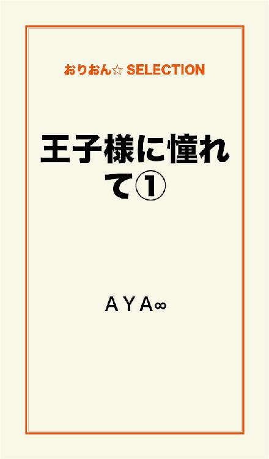

| 王子様に憧れて 完全版 | |
| ＡＹＡ∞ | |
この本は横書きでレイアウトされています。
また、ご覧になる機種により、表示の差が認められることがあります。

幼い頃からずっと、王子様っていう存在に憧れてた。
お姫様に対して、いつも優しくて頼もしくて。
お姫様を守るためなら、どんなに強い敵にでも立ち向かっていく。
そんな、強くてカッコ良い存在。
幼稚園の頃。
初めて恋をしたのは、アニメに出てきた勇敢な王子様みたいなキャラクター。
小学生の頃。
次に恋をしたのは、スクリーンのなかでキラキラと輝いている王子様みたいなアイドル。
そして......。
19歳になった、現在。
「陸（リク）！」
沢山の人達で賑わう、お昼過ぎの街。
ナチュラルメイクをした女性が、嬉しそうな笑顔を浮かべて映画館の前に駆け寄った。
「空（ソラ）！」
振り向いたのは、映画館の前に立っていた21歳の男性。
陸はなかなか整った顔で、明るく空に笑顔を向けるけれど。
空からは何故か笑顔が消えて、ちょっぴり不満そうな表情を浮かべた。
久しぶりのデートなのに......。
陸の服装は、いつもと変わらないラフなもの。
しかも足に履いているのは、サンダル。
空が着ているお気に入りのワンピース、選ぶのに１時間はかかったのに......。
それだけじゃない。
少し背伸びをして、空は陸が被っている帽子を取り上げた。
帽子を被っていたために、平らになっていたサラサラな茶色い髪は......。
ピョン......！
ピョン！
ピョンッ！
あちこち、寝癖でハネ始める。
やっぱり......。
「寝癖も直してこなかったのっ！？」
さすがにそれには、ちょっぴり頭にくる。
「ご、ごめん......。寝坊して、時間無かったから」
陸は右手で寝癖頭を掻きながら、ただ小さく苦笑を浮かべて。
「......もういいよ。早くなかに入ろう」
空は呆れて小さく溜め息を吐いた後、映画館のなかへと足を進めた。
映画館。
大きなスクリーンに映し出されているのは、今話題のラブストーリー。
『俺は、君と出会うために......生きてきた』
綺麗な夜景をバックに、イケメン俳優の胸キュンする台詞。
『もう二度と......私を離さないで......っ！』
美人女優の涙が、夜景に負けないくらい美しく輝き、２人はギュッ！と、お互いの体を抱き締め合った。
映画を観ている空や他の客達が、瞳にじんわりと涙を浮かべるなか。
「くかー......」
今の空気には不似合いな声が、微かに聞こえてきた。
「すぴぃー......」
............。
嫌な予感がして、空はゆっくりと声が聞こえてくる方に視線を向ける。
声が聞こえてくるのは、すぐ隣で。
「かぁー......」
大きな口を開けた陸が、鼾をかいて眠っていた。
やっぱり......。
「ぐぉー......がっ！ ゲホゲホゲホッ！」
しかも、自分のいびきでムセてるし......。
周りの客達のギロリと突き刺さるような、鋭い視線を感じて。
「すみませんっ！！」
空はあわてた様子で、右に左にと頭を下げた。
映画が終わった後。
「空っ！」
オレンジ色に染まった街に、陸のあわてた声がする。
スタスタと先を歩く空を、陸は沢山の通行人を避けながら、追いかけた。
「ごめんってっ！！」
やっと追い付いて、引き止めるように空の腕を掴む。
「信じらんない......」
空は振り向かないまま、冷めた声で呟いたあと。
「寝るのも酷いけど、鼾なんて有り得ないんだからっ！！」
そう声を上げると共に、腕を掴んでいる陸の手を振り払った。
「ご、ごめん......。昨日、寝るの遅かったから......」
「どーせ！ スポーツニュースで野球の試合でも見てたんでしょうっ！？」
空は、嫌味で言ったつもりなのに......。
「昨日はナイターの試合が、超良くてっ！ ジローがサヨナラホームラン打った時は、感動して涙出たっ！」
その試合を思い出した途端、陸の瞳はキラキラと輝く。
ふと、何かに気付いたような表情を浮かべると。
「ナイター見て泣いた......プッ！」
陸は自分で言った寒いオヤジギャグに、自分で笑いを吹き出した。
............。
「帰る」
「わぁぁ......ごめんっ！！」
冷めた表情でキッパリと言う空を、陸は再び腕を掴んで引き止めた。
その時。
ズキッ！！
「っ......！」
空の足に鋭い痛みが走って、思わず顔をしかめる。
普段はスニーカーばかり履いているのに、今日はワンピースに似合うミュール。
慣れないミュールで早歩きなんてしたから、靴擦れしてしまった。
「空......？」
そんな空に気付いた陸が、不思議に思って声をかける。
「な、なんでもない......っ」
靴擦れしたなんて知られたくなくて、なんとか誤魔化す。
「......あっ、俺トイレ行きたいっ！ 空、ベンチ座って待ってて！」
そう言うと、陸は近くの公園のなかにあるトイレに向かって走って行った。
公園のなかには、家に帰ろうと片付けをしている若い母親と幼い子供達。
空いているベンチに空が座ると、公園の前の歩道を部活帰りの男子高校生が通るのが見えた。
肩に掛けているのは、野球のバットが入っていると思われるケース。
その姿は自然と、陸が高校生の時の姿と重なった。
陸を初めて知ったのは......空が高校生の時。
空は高校１年生になったばかりで、まだ学校に慣れることで精一杯だった頃。
グラウンドの真ん中に立って、ピッチャーとしてボールを構えている陸を見つけた。
空のすぐそばにある、満開に咲く桜の木が見えなくなるくらい、その姿に、目を奪われた。
あの頃の陸は......。
一緒に戦うメンバーを、気にかける姿が、どんな童話の王子様よりも、優しくて。
真剣で力強く、戦う姿が、どんなアニメのキャラクターよりも、勇敢で。
汗をかきながら、プレーをする姿が、どんなアイドルよりも、キラキラと輝いていた。
だけど、今の陸は......。
「空！ お待たせっ！」
軽く息を切らせながら、トイレを済ませた陸が駆け寄ってくる。
ベンチに座っている空の前まで来ると、ふと動きが止まった。
ムズムズとした表情を浮かべた途端......。
「ぶぇっくしゅん！ オラァッ！！！！」
顔を背けて、大きなくしゃみをした。
くしゃみの後に『オラァッ！！！！』とか、何か言うのもオヤジっぽいし。
高校生の時は、あんなに素敵だった陸も......今ではこんなに、オヤジキャラ。
「空。足、出して」
「えっ？」
向かい合わせにしゃがんだ陸の言葉に、空は少し驚いたように反応した。
そっと......。
陸は手を伸ばして、自分の膝の上に空の片足をのせた。
「うわ、痛そ――......」
少し表情をしかめながら、空が履いているミュールを脱がす。
ポケットから陸が取り出すのは、買ったばかりの絆創膏の箱。
「陸......」
ひょっとして......靴擦れしたことに、気付いてくれてたの？
トイレに行くふりをして、絆創膏を買いに行ってくれてたの？
「ありがとう......」
血が滲む踵を手当てしてくれる陸に、そっとお礼を告げる。
陸が......好き。
整った顔も、背が高いところも。
今は帽子で隠れているけれど、茶色いサラサラな髪も。
些細な自分の変化にも気付いてくれる、優しいところも。
それでも......。
オヤジみたいな仕種は、直してほしい。
そう思うのは、ワガママなのかな？
王子様みたいに、いつもカッコ良くいてほしい。
そう思うのは、勝手なのかな？
そんな２人の姿を、公園から少し離れた歩道から21歳の男性が見ていた。
帽子を被っていて、ブランド物の大きなサングラスをかけているから、顔は隠れている。
服装は陸と反対で、ブランド物のオシャレなもの。
「海（カイ）......どうかしたの？」
20代半ばのバッチリとメイクをした美人な女性が、男性のそばに来た。
露出した服装から、胸が大きいことと細いスタイルが一目で分かる。
女性はわざと胸があたるようにして、甘えるように海の腕に腕を絡めた。
「いや......なんでもない」
冷静な口調で応えると、海は大きなサングラスを外した。
サングラスを外して、見えたのは......陸とまったく同じ顔。
ボロアパートの２階。
ここが、陸の家。
「お邪魔しまーす」
「どーぞー」
なんて、微笑ましい言葉を交わしながら、空と陸は家に入った。
入ってすぐに、狭いキッチンがあって。
小さなバスルームとトイレのドアも見える。
キッチンを通ると、リビングがあって、部屋の真ん中には、小さなテーブルが置いてある。
すぐそばの押し入れには布団が入っている。
ここで食事を取り、ここで布団を敷いて寝ている。
収納棚の上には、野球のグローブとトロフィーと写真がズラッと並んでいた。
空はふと、写真立てに入っている新しい写真に気が付いた。
「これ！ この前電話で話してた、大会で優勝した時のっ！？」
写真を指しながら、笑顔で陸の方に振り向く。
写真に写っているのは、少年野球の子供達と、50代半ばの監督と陸。
真ん中あたりにいる男の子達の手には、トロフィーや表彰状が持たされていた。
穏やかに微笑んでいる監督とは反対に、陸は子供達と同じような顔で無邪気に笑っている。
陸が、『源（ゲン）さん』と呼んで慕う監督。
本職は大工さんの源さんの下で、陸は高校を卒業してすぐに働き始めた。
平日は、大工の見習いとして働いて、休日は、少年野球チームでコーチとして子供達に野球を教えている。
「この真ん中にいるピッチャーのハルが、サヨナラホームランを打って勝ったんだ！」
空の隣に立つと、陸は写真を見ながら楽しそうに話し始めた。
「だけど、みんなそれぞれ本当に頑張ったと思う！ みんなが頑張ったからこそ、優勝出来たんだっ！」
仄かに頬を赤く染めながら、本当に嬉しそうに微笑む。
「ハルの隣にいるキャッチャーのアキは、ずっとメンバーに声かけてたしっ！こっちのナツは、１回エラーしちゃったけど......その後めげずに、めちゃくちゃ頑張ったっ！」
楽しそうな表情の理由は、野球だけじゃない。
メンバーの子供達、ひとりひとりが大切で大好きだから。
野球のことは、よく分からないし、特に興味が有るというわけでも、無いけれど。
それでも......。
幸せそうな、キラキラとした陸の笑顔を見ていると、空も自然と、穏やかな笑顔になって、ずっと......陸の話を聞いていた。
今、テレビが放送しているのは、話題の恋愛ドラマ。
『もう......どこにも行くな』
切ない表情を浮かべたイケメン俳優が、愛しさを込めて美人女優を後ろからギュッと抱き締めた。
そのドラマをうっとりとした表情で見ているのは、床に座っている空。
こういうシーンを見ると......。
女の子なら誰でも......。
『私も好きな人に、こういうコトして欲しいな』なんて、憧れてしまうもの。
そっと......、隣に座っている陸に視線を向ける。
「ふわぁ......っ」
顎が外れるんじゃないかと思う程、大きく口を開けて欠伸をしていた。
しかも、右手の立てた小指で、鼻の穴をホジホジ......。
「鼻、ほじらないっ！！」
漫才のツッコミを入れる勢いで、空は陸の右手を掴んだ。
「つまんね――......」
退屈そうに言ったあと、陸は、テーブルの上に置いてあったテレビのリモコンで、番組のチャンネルを変えてしまった。
「げっ！ジローのチーム負けてるしっ！！」
「あっ！」
テレビ画面に映っていたイケメン俳優と美人女優が、逞しい野球選手に変わって、ショックな声を上げる空に構わず、陸はショックな声を上げながらも、すぐにテレビに夢中になった。
「ちょっと！ リモコン返してよっ！！」
不満そうな表情を浮かべて、空はリモコンを取り返そうとするけれど。
ヒョイ！
リモコンを持った手を陸が高く上げるから、届かない......。
いきなり、「ジャンケンポンッ」なんて言うから、空は反応したようにパーを出した。
陸が出したのは、チョキ。
負けた......。
悲しそうに、空は自分が出したパーの手を見つめていると。
「元気出せっ！ これあげるから」
『ほいっ』と、手の平の上に何かを置かれた。
「なにコレ......？」
小さなグリンピース......？
「鼻クソ」
「いらないしっ！！」
平然と言われて、思わず手を払ってそのへんに捨てちゃった。
「もぉーっ！！ 私は陸に、こういうコトをして欲しいのっ！！」
怒った視線は陸に向けたまま、テレビのリモコンでピッ！とチャンネルをさっきの恋愛ドラマに戻す。
陸は真顔でテレビに視線を向けると...。
何故か見る見るうちに、頬が赤く染まっていった。
「陸......？」
思いもしなかったその反応に、空は少し驚く。
彼女をギュッと抱き締めるだけのシーンで、そんな反応するなんて......。
不思議に思た空が、テレビに視線を向けると......。
テレビに映っているのは......ベッドシーンッ！！？
「なっ！！？」
驚きのあまり、空は一瞬にして頬を真っ赤に染めた。
「ちっ......ちがっ......！ してほしいのは、これじゃなくて......っ！！」
両手を横に振って、あわてて否定しようとしたけれど、急に真顔になった陸が、真っ直ぐに見つめてきて...。
「ぅっ......」
否定しようとする動きを、簡単に止められてしまう......。
そんな王子様みたいな顔で見つめてくるの......反則。
「空......」
少しずつ距離が近くなり......。
ドキン......！
ドキン......！
ドキン......！
キスを待つように自然と空の瞳は閉じていく。
けれど。
ムニッ！
いきなり胸に手を当てられた瞬間......。
「ぎゃぁぁぁっ！！！！」
ばっちーん！！！！
声を上げると共に、陸の頬を平手打ちした。
「っ――......痛いんですケドッ！」
叩かれた頬を手で押さえて、涙目になりながら視線を向けてくるけれど。
「いきなり胸を触る奴が、どこにいるのよっ？！ このセクハラッ！！」
信じられない気持ちから、空は声を上げた。
「セッ......セク......！」
『セクハラ』と言われたことが、陸はよっぽどショックらしい。
「こういう時、最初はキスからするものでしょうっ！？」
王子様がお姫様にするみたいな、キスをしてほしかったのにっ！
「どうしてムードとか考えてくれないのっ！？」
言いながら、段々悲しくなってきて。
「陸のセクハラオヤジッ！！ 大キライッ！！」
瞳に涙を溢れさせながら立ち上がると、キョトンとしている陸を置いて、家から出て行った。
どうして......？
どうしていつもこうなの......？
空の家。
「ぎゃはははははっ！」
リビングのソファでお腹を抱えて笑うのは、中学生の男の子。
「風（フウ）、あんた笑い過ぎ......」
そばに座っている空は、男の子を見て不満そうに唇を尖らせた。
「ごめん、ごめんっ！ でも俺。コーチのそういうところ、すっげー好きっ！」
「どこがっ？！ 自分の彼女に鼻クソあげる彼氏なんて、聞いたことないしっ！！」
中学１年生の風に『いきなり胸を触られた』なんてことまでは、話せないけれど。
「そういう飾らないところが良いじゃんっ！？」
「飾らなさ過ぎだよ――......」
笑顔の風とは反対に、空は溜め息を吐くと共にちょっぴり落ち込んだ。
「全然......王子様じゃないよ......」
膝の上にあるクッションを、ギュッと胸に抱えてぼやくと、『王子様』の単語に、風はピクリと反応した。
「姉ちゃん......。まさか、まだ『王子様みたいな男の子と恋がしたい！』なんて思ってないよなっ！？」
「ぅっ......」
呆れたように図星を指す風に、空は内心ドキッ！とする。
「ドラマみたいな台詞なんて、実際の男は言わないからっ！ ってか、言うとしたらホストくらいじゃねっ！？」
「そっ、そんなこと......っ！」
「浮気されたり、内緒で借金作られるより、多少オヤジっぽいだけの方が、全然良いじゃんっ！？」
「そっ、それは......っ！」
確かにそうだけれど......。
「ってか、風！ ちょっとは私の味方もしてよっ！！」
「やだ」
助けを求める空を、風はキッパリと拒否する。
「俺は絶対、コーチの味方！」
ニッと明るい笑顔を浮かべた後。
「だって......今俺が大好きな野球を続けられるのは、コーチのおかげだもん......」
何かを思い出したかのように、穏やかな表情になった。
小学校を卒業するまで、風は、陸がコーチをする少年野球チームに入っていた。
陸を慕う理由は、陸が良いコーチだったからだけではないみたい。
詳しいことを聞こうとすると、いつもはぐらかされてしまうけれど......。
「コーチって......顔は良いし、優しいから。何気にモテるかもなぁ」
口元にちょっぴり意地悪な笑みを浮かべながら、風は話す。
「大事にしないと、他の女に取られるかもよ？」
「え......」
その言葉を聞いた途端、空の胸はズキッ！と痛んだ。
そんな......。
陸が他の女の人のところに、行っちゃうなんて......。
空の頭のなかに、思い出される。
高校生の陸の隣にいた、可愛らしい女子生徒のこと......。
思い出したくないっ！！
その記憶を消すかのように、空は首をブンブン！と横に振る。
陸が他の女の人のところに、行っちゃうなんて......。
そんなの、嫌だよ......！！
翌日。
空は、陸が住んでいるボロアパートに向かって歩いていた。
時刻は、７時を少し過ぎたところ。
陸はまだ寝ているかも......。
『他の女に取られるかもよ？』
風の言葉が頭から離れなくて、空はあまり眠れなかった......。
ピンポーン！
陸の家のドアの前まで来ると、インターホンを鳴らした。
............。
反応は無し。
やっぱり、まだ寝ているのかも？
ピンポーン！！
もう一度鳴らしてみるものの。
............。
やっぱり、反応は無し。
ピンポーン！！
ピンポーン！！
ピンポーン！！
少しムキになって、鳴らし続けたところ。
ガチャッ！
やっと、ドアは開けられた。
「陸......？」
ドアを開けてくれたのは、陸だけれど。
何故か違和感......。
茶色い髪が、黒に染まっている。
それに......いつもとは違う、オシャレなブランド物の服装。
「ぁっ......おはよう！」
思わず黙ってしまったことに気が付いて、空はあわてて声をかけた。
「あのね......。その......昨日は、ちょっと言い過ぎちゃったかなって......」
俯き気味で、ポツリポツリと反省の言葉を告げようとするけれど、陸は、何故か無表情......。
「ごめ......っ」
『ごめんね！』と言う言葉を聞く前に、陸は部屋の奥に向かって歩いて行った。
「陸......！？」
うそ......！
そんなに怒ってるの......？
『他の女に取られるかもよ？』
風の言葉が頭に浮かんできて、不安に襲われる。
「陸っ！！」
あわてて陸を追い掛けて、腕を掴み。
グイッ......！
強引に振り向かせたその唇に、唇を重ね合わせた。
その瞬間。
ドサッ！！
２人しかいないはずの室内に、後ろから物音がした。
少しビックリして、空は振り向く。
床に落ちているのは、コンビニのビニール袋。
そして......。
え......？
空は自分の視界に映ったものに、余計にビックリして目を見開いた。
そこにいたのは......陸。
茶色い髪と、いつものラフな服装。
陸が２人？！！！
どういうこと......？
陸が......２人いる。
ブランド物の服装をした、冷めた表情を浮かべている陸。
いつものラフな服装をした、ショックを受けた表情を浮かべている陸。
整った顔も、高い身長も、スタイルも、何もかもが同じ。
唯一違うところというと......髪の色くらい？
それぞれの理由から口を開かずに、シンと静まり返っているなか。
「......今のは俺、悪くないから」
先に口を開いたのは、冷めた表情を浮かべた陸だった。
その途端。
「っ！！」
ショックな表情を浮かべていた陸は、あわてて空の腕を掴むと、自分の後ろへと隠すように引っ張った。
「りく......？」
いつもと様子の違う陸に不安を感じて、空はそっと背中に呼びかける。
だけど陸は......。
怖い表情を浮かべて、もうひとりの陸をただ睨むだけ。
どうして何も応えてくれないの......？
そんな陸に呆れたのか、もうひとりの陸は小さく溜め息を吐くと。
「......初めまして。朝日（アサヒ）海です」
冷めた表情は変わらないまま、空に声をかけた。
「かい......さん......？」
初めて聞いた名前を、空は小さく呟く。
「陸の、双子の兄です」
ふたご......？
「双子ッ！！！？ 陸に双子がいたのっ！！！？」
初めて知ったことに、空は驚きのあまり声を上げた。
それでも陸は、背を向けたまま何も応えてはくれなくて、ただ空の腕を掴んでいる手に、ギュッと力が入るだけだった。
「......出直した方が、良さそうだな。急に来て悪かった」
言葉では謝っていても、海の表情はやっぱり冷めたまま。
陸と空を避けて、部屋から出て行く。
すれ違った時......。
海からは、どこかで嗅いだことのあるような香りが微かにした。
「......んで......っ」
静かな部屋に、ポツリと洩れた陸の声。
「え......？」
聞き取れなかった空が、その背中を見ながら聞き返した時。
「なんで海とキスしてんだよッ！！！？」
声を上げると共に、陸は振り向いた。
低い声。
冷たい瞳。
こんなに怒った陸......初めて見た。
「だっ......だって......陸に双子がいるなんて......知らなかっ......ッ！！！？」
『知らなかった』と言う前に、空の唇は唇で強引に塞がれた。
「っ......？！」
驚いた弾みで身を引こうとしたけれど、頭と腰を押さえ付けられて動けない。
「っ......！！」
深く深く重ね合わされたそのキスは、まるで『独占欲』を伝えてくるみたいだった......。
唇を解放された途端、今度はギュッ！と、痛みを感じるくらいに抱き寄せられた。
「......空だけは......わたさ......なぃ......っ」
微かに震えた弱々しい声。
けれど空の耳には、確かに届いた。
『空だけは、渡さない』
空だけは......？
それって、どういうこと......？
気になって、聞こうとしたけれど、今の空気では、聞くことが出来なくて......。
微かに震えた陸の体を両手で抱き締めると、落ち着けるようにただ背中を撫で続けた。
大学。
今は、お昼休み。
空は女友達と２人で、室内でお弁当を食べていた。
「双子の兄......？」
「うん......。半年も付き合っているのに、兄弟がいるなんて......しかもそれが双子だなんて。全然、聞いたことなかった」
女友達の名前は、早（サキ）。
大学に入ってから知り合い、意気投合してすぐに仲良くなった。
「話す必要が無かったから、言わなかった。あるいは......言いたくなかった、とか？」
言いたくなかった......？
「どういうこと？」
真剣な早の言葉に、不思議に思った空は聞き返す。
「私、妹がいるから分かるんだけど。兄弟とか姉妹って、案外難しいところがあるのよね......」
「そうなの......？」
空には弟しかいないから、分からないけれど。
イメージでは、同性の兄弟って楽しそうに思える。
一緒に買い物をしたり、同性だからこそ話せることも沢山あるだろうし......。
「異性の兄妹では『男の子だから』『女の子だから』で、済まされることも。同性の兄弟では、比べられることも多かったり......。それが、外見がまったく同じ双子なら......尚更かもね」
ちょっぴり切ない表情を浮かべながら、早は応えた。
「まっ！ 半年も付き合ってたのに言ってくれなかった、空の淋しい気持ちも分かるけど。今まで通り、空は彼を大切にしてあげることっ！」
「うん......」
そうだよね......。
素直にそう思えた空は、大きく頷いた。
「しっかし！ 今日は暑いわね――っ」
早は右手をうちわのようにして、自分をパタパタと扇いだ。
「本当。７月でこんなに暑いと、８月はどうなるんだろうね......」
空は小さく苦笑して、太陽がギラギラと眩しい窓の外を見る。
「髪も、そろそろ切りたいと思ってて......」
「あっ！ それならオススメの美容院があるわよ！」
髪に触れながら空が言うと、早は反応したように笑顔を浮かべた。
「駅のそばにある、美容院！ 朝日さんっていう美容師が、先月から働き始めてるの！」
「朝日さん......？」
偶然に陸と同じ名字が、なんとなく気になる。
「超イケメンで、腕も良いんだぁー！ 今の彼氏がいなかったら、私も声かけてたんだけどなぁ」
なんて。
ずっと真剣な表情で応えてくれていた早の表情が、頬を赤く染めながら緩む。
「空。予約の電話してあげるから、行ってみなよっ！」
そう言いながら、早は携帯電話を手にした。
夕方。
大学が終わると、空はそのまま駅のそばにある美容院に向かった。
壁一面が、綺麗なガラスで出来ていて、外からでも、店内のオシャレな様子が見える。
ちょっぴり緊張した空がドアを開けると、耳に届くのはクラシックの優しい音楽。
「いらっしゃいませ」
丁寧な口調で声をかけてくれたのは、ドアのそばにいた20代前半の女性だった。
一瞬、モデルさんかと思ってしまった程。
女性は美人な顔で、スラッと足が長く細いスタイルをしている。
「あの......朝日さんに予約を入れた、東野(ﾋｶﾞｼﾉ)ですが......」
「こちらへどうぞ」
緊張しながら空が応えると、女性はふわりと優しく微笑んで席を案内してくれた。
造りが、新しいだけじゃなく、とても丁寧に掃除もされていて、綺麗な店内。
奥に進むにつれて、クラシックの音楽と共に聞こえてくるのは...ハサミとドライヤーの音と、美容師と客の穏やかな話し声。
椅子に座った空は、準備をしてもらい、『朝日さん』という美容師が、来るのを待っていると......。
「お待たせしました」
落ち着いた口調で、後ろから男性に声をかけられた。
視線を向けた途端。
え......？
空は驚きのあまり、大きく目を見開いた。
そこにいたのは......自分の恋人と、まったく同じルックスを持った男性。
海！！！？
大学での女友達、早のオススメで入った美容院。
そこにいた美容師は......陸の双子の兄である、海。
驚きのあまり、空は海に視線を向けたまま言葉を失う。
すると......。
「こんばんは」
落ち着いた口調で、海に声をかけられて。
「こっ、こんばんはっ！！」
ハッ！！と気付いたように、空は応えた。
そして思い出すのは、陸と間違えて強引にキスをしてしまったこと。
「せっ、先日は失礼しましたっ！！」
慌てて海に向かって、深々と頭を下げた。
「気にしてないよ。アイツと間違えられることは、子供の頃から多かったから」
冷静にそう言ってもらえて、空はホッと安心する。
「ところで......。髪は、どのようにしますか？」
美容師として穏やかな口調で聞かれて、やっと今の目的も思い出す。
「暑くなってきたから、切りたいんです」
空がそう応えると......。
スッ......。
海の長い指先が、空の髪に優しく触れて。
「綺麗な髪なのに、もったいない......」
真っ直ぐな瞳で、まるで囁くように告げられた。
ドキッ......！
思わず空の胸が、小さく高鳴った。
お世辞で言ったんだとは、思うけれど、『綺麗な髪』なんて言われたの、初めて......。
「どのくらい切ろうか？」
「すっ、少しでいいです......」
ここに来るまでは、思い切ってサッパリしようと思っていたけれど。
そんなふうに言われたら、気持ちも変わってしまう......。
初めて会った日。
海とすれ違った時、どこかで嗅いだことのある香りが微かにした。
それは、美容院の香りだったんだ......。
チョキチョキチョキチョキ......。
店内には、優しく流れるクラシック。
美容師と客の、穏やかな話し声。
ハサミとドライヤーの音。
髪を洗うシャワーの音。
色々な音が、溢れているけれど。
チョキチョキチョキ......。
空の耳には、自分の髪を切ってくれる海のハサミの音が、１番綺麗に聞こえた。
１番近くで、聞こえる音だから。
そんな単純なことじゃない。
鏡に映っているのは、冷静で真剣な海の表情。
まるでハサミが音楽を奏でているみたいに、綺麗でスムーズな手つき。
空は、机の上にある雑誌を読むこともせず、髪を切られていく自分の姿を見ることもせず、ただ、じっと......鏡に映っている海の姿を見つめていた。
本当に、陸にそっくり......。
双子だから、そっくりなのは当然だけれど、まるで、陸本人がいるみたい。
ブランド物と思われる、オシャレな服装。
けれどよく似合っているから、変に背伸びをしているなんて思わない。
動くたびにサラサラとなびく、黒い髪。
美容師だからって、変に染めたりキメたりしない自分らしさを感じる。
王子様みたいに整った、真剣な海の表情。
陸も真剣な時は、こういう表情になるのかな......？
陸の表情といえば......。
子供みたいな、無邪気な笑顔。
それから......、大きな口を開けて、鼾をかきながら眠っている表情。
『オラァッ！！！！』とか言って、くしゃみをしている表情。
退屈そうに、鼻の穴をほじっている表情。
どれも、王子様とは程遠い。
まるで、オヤジみたい......。
21歳なら、これくらいカッコ良い表情をしてもいいのに、なんて思いながら、鏡に映っている海を見つめていた。
ふと......鏡の海と、バッチリ目が合って、
「っ！！！？」
驚いた弾みで、空は勢い良く視線を下に向けた。
や......やばい......。
さすがにジッと見すぎたかな......？
不安でドキドキとしている、空とは反対に...。
「......いつから？」
「え？」
「アイツと......陸と、付き合い始めたのは、いつから？」
海の口から出たのは、意外な質問だった。
「あっ......半年くらい、前からです」
少し驚きつつも、思い出しながら空は答える。
「私、弟がいるんですけれど。陸は弟が入っていた少年野球チームのコーチをしていて。再会したことが、付き合うきっかけになったんです」
「再会......？」
その単語に、冷静な海は小さく反応した。
「あっ。私、陸と同じ高校で後輩なんです！ 陸が３年生の時、私は１年生。でも......その時、陸には彼女がいて......」
今でも、覚えてる。
小柄でスタイルが良くて、瞳が大きな可愛らしい彼女。
外見は王子様の陸の隣に、可愛らしいお姫様みたいな彼女はお似合いだった......。
「......春木 桃（ハルキ モモ）......」
海がポツリと呟いた名前に、反応したように空は驚く。
「どうして彼女の名前......」
『どうして彼女の名前、知ってるんですか？』って、聞こうとしたけれど、すぐに思い止まる。
兄弟なんだから、知っていてもおかしくはないと。
「......お兄さんから見て、陸ってどんな人ですか？」
微笑みながら、空は聞いてみた。
恋人から見てと、兄弟から見てと、視点が違うと、映り方も違うんだろうと思って。
だけど、それを聞いた途端、海の冷静だった表情は、一瞬ただの冷たい表情になって。
「これで、如何ですか？」
美容師としての笑みを浮かべて、髪に触れながら話をそらした。
「え？ あ......はい。良いですね！」
鏡でチェックをしながら、空は答える。
お世辞でも、適当な返事でもなく、綺麗に切られた髪は長さも良く、満足出来る形になっていた。
ただ......、空にとっては、髪型よりも海に話をそらされた方が気になったけれど。
帰って行く空の後ろ姿を海は店内から真顔で見ていた。
「朝日くん。オーナーが呼んでるわよ」
そばに来たのは、空を席に案内してくれた美人な女性美容師。
オーナーのところに行こうとした海が、美容師とすれ違った時。
「今夜、部屋で待ってるから......」
囁くように、こっそりと告げられた。
けれど、海は視線だけを美容師に向けて、表情を変えることもなく、オーナーのところへ向かって歩いて行った......。
『ドォォンッ！！！！』
『ダダダダダッ！！！！』
『ドッカーンッ！！！！』
陸の部屋のテレビから聞こえてくるのは、アクション映画の戦闘音。
野球が大好きな陸と、ロマンチックなラブストーリーが大好きな空。
そんな２人でも、共通する好きなものが『アクション映画』だった。
といっても......、『必ず、君のところに戻ってくるから。』なんて。
美人女優に告げて戦いに行く、イケメン俳優の王子様みたいな姿が、
空が１番、注目しているところなんだけれど......。
テレビの前の床に、横に並んで座っている２人。
ごく普通に、映画を楽しんでいる空とは反対に。
チラッ......。
陸はテレビよりも、空が気になるようで、仄かに頬を赤く染めながら、チラチラと何度も視線を向けていた。
「......頭切った？」
「髪の毛ね」
さり気なく聞いてくる陸に、漫才のツッコミみたいにサラッと応える。
ふと空は、口元にニヤリと小さな笑みを浮かべて。
「可愛い？」
答えを求めるように、甘えた視線を向けた。
「えっ......ぁっ......へ、変じゃない......っ」
頬を赤く染めたまま、陸は視線をそらして答える。
本当は『可愛い』って、思ってくれているくせに、恥ずかしくて、素直になれないみたい。
ふと......『髪を切ってくれたのが、お兄さんだって知ったら驚くかな？』なんて考えが、空の頭のなかに浮かんだ。
「今日ここに来る前に、駅のそばにある美容院に行ってきたの」
「へぇっ」
ごく普通に返事をする陸に『あれ？』と、思わずにはいられない。
ひょっとして......海が駅のそばにある美容院で働いていること、知らないのかな？
そっと......、陸の指が、空の髪に触れた。
陸の手は、大きくて温かい。
いつも少年野球チームのコーチとして、グラウンドの土や、大工見習いとして、木材に触れているから。
多少荒れてはいるけれど......男らしくて、頼もしい手。
自然と距離を縮めて、陸は空の髪に口付けるようにギュッと抱き締めた。
「空......美容院の匂いがする」
愛しそうに微笑みながら、陸は囁く。
「陸は......汗くさい」
「マジっ！！！？」
ポツリと言った空の言葉に、ドキッ！と反応するけれど。
「でも......嫌いじゃないよ」
気持ちに応えるように、空は両手を陸の背中にまわしてくれた。
「今日もお仕事、ご苦労様」
にっこり柔らかく微笑んで、空は優しく告げてくれる。
「空......」
その、たった一言だけで、『今日も仕事頑張って良かった！』なんて、思えてしまうのは、単純なのかな......？
コツン......と、陸は空の額に額をくっつけた。
「好きだ」
頬を赤く染めながら、目を閉じて告げる素直な気持ち。
「私の方が好きだよ......？」
頬を仄かに赤く染めながら、空は応える。
「いーやっ！ 絶対に俺の方ッ！！」
「私の......ッ？！」
負けじと言おうとする空のその唇を、唇で強引に塞いだ。
ゆっくりと、２人で床へと崩れていくなかで......やっぱり思う。
『私の方が、陸のことが好きだよ？』って......。
だって。
だって......。
あの頃から、ずっと陸のことが、好きだった......。
ずっと陸のことを、想っていた......。
高校に入学したばかりの頃、満開の桜が咲くなか。
空は新品の制服姿で、女友達２人と校舎の外を歩いていた。
「彼氏欲しいなぁ......」
「あんた、ソレばっか！」
ぼやく友達と、ちょっぴり呆れる友達。
「そういえば、空はどんな男子がタイプだっけ？」
「私......？」
ふいに話をふられて、空は応える。
「王子様みたいな、男の子！」
これだけは、幼い頃からずっとずっと変わらない答え。
「アンタ高校生にもなって、まだ『王子様』なんて言ってるの！？」
「うるさいなぁ」
呆れる友達とクスクスと笑う友達に、空は拗ねたように小さく唇を尖らせた。
幼い頃に好きだった童話。
シンデレラ。
ガラスの靴だけをてかがりに、シンデレラを探してくれる王子様なんて素敵じゃない？
白雪姫。
毒リンゴを食べてしまった白雪姫を、甘いキスで眠りから覚ましてくれる王子様なんて素敵じゃない？
今でも、好きなもの。
恋愛ドラマ。
イケメン俳優と美人女優の恋愛模様は、まさに女の子の憧れそのもの！
恋愛小説。
彼が死んでしまう話が多いけれど、最後まで想いを大切にする２人の姿に感動するの！
他にも、恋愛漫画に恋愛アニメ。
王子様みたいな男の子が出てくる話は、どれも大好き！
そんな恋に憧れることしか出来なかった、空の耳に届いたのは...。
「しまっていくぞーっ！！」
グラウンドからする、ひとりの男子生徒の声だった。
何気なく振り向いた空の瞳に映ったのが、野球部のピッチャーとして、グラウンドの真ん中に立つ陸の姿だった......。
子供みたいに、無邪気な笑顔。
動く度に飛ぶ、キラキラと光る汗。
土で汚れたユニホーム姿で、真剣にボールを投げる姿。
ドキンッ......！
空の視界には、陸しか見えなくなって、胸の奥が締め付けられると共に、熱くなった。
こんな気持ちになったの、初めてだった......。
「かっ......かっこいぃーっ！！！！」
空よりも先に声を上げたのは、ずっと『彼氏が欲しい』と言っていた友達。
けれど。
「残念でした。朝日先輩、彼女いるから」
友達のその言葉を聞いた途端、頬を赤く染めてはしゃいでいたのが、ガクリと落ち込んだ。
空の視界に映る、練習を終えた陸に駆け寄る制服姿の女子生徒。
小柄でスタイルが良くて、瞳が大きな可愛らしい彼女。
春木 桃。
空の家。
空がリビングに入ると、お風呂上がりの父がソファに座っていた。
片手に持っているビールを飲みながら、テレビの野球に夢中になっている。
いつもなら、風と見ているはずなのに、そこに、風の姿は無い。
「風は......？」
「今日の少年野球の試合で、三振とエラーしたからって。部屋に引きこもってる」
何気なく聞いた空に、父は小さく溜め息を吐いて応えた。
「もう少し、心が強くなってくれれば良いんだけどな......」
父がそうぼやいてしまうのも、無理はない。
まだ小学生だから、試合に負けて酷く落ち込むのも分かるけれど、その度に毎回、部屋に引きこもってなかなか出て来ないから......。
「野球って......面白い？」
「サイコー！」
何気なく聞いた空に、父はニッと笑って振り向いて、ビールを持っていない方の手の親指を、グッ！と立てた。
「お父さんも、高校生の時は野球やってたんでしょ？」
「まぁな。空も彼氏にするなら、野球をやっている人にしなさい。野球をやっている人に、悪い人はいないから」
『野球をやっている人』
ドキッ......！
それを聞いて真っ先に思い浮かぶのは、陸の姿だった。
だけど。
だけど......。
だけど、陸には......。
自室に戻ると、空はそのままベッドへダイブした。
机やベッドの上には、女の子らしい可愛い小物が置いてあって、本棚には、イケメン俳優達の雑誌やイケメンキャラが出てくる恋愛漫画本がズラッと並んでいる。
いつもなら、イケメン俳優が出演する恋愛ドラマのＤＶＤを見て、ポーッとうっとりするか、イケメンキャラが出てくる恋愛漫画本を読んで、ヒロインに感情移入するのに......。
今は、どちらもすることはなかった......。
「......朝日......陸......」
ポツリポツリと呟く、今日初めて知った人の名前。
陸のことを思うと、胸が心地良くドキドキする。
だけど。
だけど......。
だけど、陸には......。
小柄でスタイルが良くて、瞳が大きな可愛らしい彼女がいる。
ズキンッ！
心地良く高鳴っていた空の胸は、痛みと苦しみで強く締め付けられた......。
こんな気持ちになったのは、初めてだった。
放課後。
図書室の本を数冊持った空は、ひとりで廊下を歩いていた。
見たことのない教室が並び、人通りの無い廊下。
入学式から数日が過ぎたとはいえ、まだ慣れない校舎。
図書室に行きたいのに......ここ何処っ？！
「あれぇ？ キミ１年生？」
「え......？」
声をかけられて振り向くと、そこには３年生の男子生徒２人が立っていた。
でかっ！！
見た瞬間に、そう思ってしまう程、２人は背が高くて逞しい大きな体をしている。
「カワイイねぇ」
「えっ......ぁっ......あの......っ」
「こんなとこで何やってんの？」
「あっ......その......っ」
男の子に対して免疫がほとんど無いから、上手く応えられない。
ジリジリと迫られて、後退るけれど背中には壁。
怖い......っ！
「こらっ！ ヒガシっち！ 北Ｐ！」
空を助けてくれるかのように、この場に新しい声がした。
男子生徒２人と空が振り向くと......。
そこにいたのは......陸。
ドキッ......！
陸の姿を見た途端、空の胸は大きく高鳴った。
「デカイ男２人で詰め寄ったりするから、その子怯えてんだろ？」
優しい口調の陸の話を聞いて、やっと男子生徒２人は空から離れてくれる。
「ごめんね？ コイツ等、悪い奴じゃないから」
小さく苦笑しながら謝ってくれる陸に、俯き気味で頷くことしか出来なかった。
「何処か、探してるの？」
「えっ......ぁっ......えっと......」
優しく聞いてくれる陸に、俯き気味のままで上手く応えられない。
聞き取ろうとして、距離を少し近くされて。
ドキン......！
ドキン......！
ドキン......！
自然と頬が赤く染まっていく空は、益々俯いた。
どうしよう......。
こんなに、ドキドキするのも。
恥ずかしいのも。
初めてで......。
どうしたら良いのか、分からない......。
「プッ！ １番怖がられてるの、陸じゃんっ！？」
そんな空の様子を見た男子生徒２人は、空が『怯えている』と勘違いして笑いを吹き出した。
「ぁ......っ！」
『そんなんじゃないですっ！！』って、否定することも、出来ないなんて......。
幼い頃からずっと、まわりは女の子の友達だけで、好きになる男の子はいつも、漫画やアニメのキャラクターかアイドル。
身近な男の子を『カッコ良い』と思うことは、数回あっても。
『好き』だなんて、思ったことはないし、用が無い限り、男の子と話すことも無かったから......。
そんな空の姿に、ちょっぴり困った顔をして、指先でポリポリと頬を掻いていた陸だったが、ふと、空が両手に抱えている図書室の本に気が付いた。
「ひょっとして......図書室探してるっ？」
閃いたように聞く陸に、反応したように空はコクリと小さく頷く。
「図書室なら、ここの１つ下の階」
ホッ、と安心したように、微笑みながら教えてくれた。
男子生徒２人と、陸はこの場から離れて行こうと背を向ける。
少しずつ。
少しずつ。
その背中が......遠くなる......。
「あのっ！！」
まるで引き止めるように、空は陸の背中に声をかけた。
「ん......？」
ゆっくりと振り向いた陸と目が合って、また仄かに頬が赤く染まる。
ドキン......！
ドキン......！
ドキン......！
「あっ......その......っ」
微かに震えた声で、何かを伝えようとした空の言葉は......。
「陸っ！」
ひとつの声によって、遮られた。
綺麗な髪をなびかせて、陸のそばに駆け寄る女子生徒。
小柄でスタイルが良くて、瞳が大きな可愛らしい彼女。
春木 桃。
「もぉっ！ 探したのよっ？」
ちょっぴり拗ねた表情を浮かべながら、桃は甘えるように陸の腕に腕を絡めた。
ズキッ......！
そんな２人の姿を見た空は、胸が締め付けられるように痛む。
「ぁっ......」
空を気にするように視線を向ける陸に、桃は気が付いて。
「早く行きましょうっ！」
まるで引き離すように、陸を自分の方に引き寄せた。
キッ！と鋭い目で、桃は空を睨み付ける。
当然だよね。
大切な、彼氏なんだから......。
「ちょっ......！」
少しあわてるけれど、陸は桃の手を振り払ったりしない。
当然だよね。
大切な、彼女なんだから......。
翌日の朝。
通学した空はグラウンドの前を通るけれど......視線を向けることはなかった。
野球部の男子生徒達の声。
バットの金属音。
キャッチボールの音。
その全てが、遠くなっていくなか......。
「あの......っ！ 図書室の１年生......っ！！」
慌てたひとつの声が、空の耳に届いた。
聞き覚えのある声と『図書室の１年生』の言葉に小さく反応して、空は何気なく振り向く。
そこには......ユニホーム姿で走ってくる陸の姿があった。
２人の間にあるフェンスの前まで来て、陸は立ち止まる。
「昨日っ、何か言いたそうだったから！」
ひょっとして、ずっと気にしてくれていたの......？
気にして、練習を抜け出して来てくれたの......？
「ぁっ......その......っ」
ドキン......！
ドキン......！
ドキン......！
空の胸の奥が、心地良さと温かさを感じながら鳴り響く。
「野球......応援してるんで、頑張って下さいっ！！」
頬を赤く染めながら、思い切ったように言うと。
太陽みたいに、眩しい笑顔で。
ひまわりみたいに、あたたかい笑顔で。
「ありがとっ！」
陸は、応えてくれた。
好き。
始まる前に、終わってしまう恋もあるんだ......。
胸が、痛くて。
苦しくて。
悲しくて。
こんなに辛いのは、初めてで......。
それでも......。
あなたが彼女と幸せなら......それでいいって。
あなたが笑顔でグラウンドにいられるなら......それでいいって。
本当に、そう思えた。
だけど......。
桜の花弁が散ると共に......陸はグラウンドから姿を消した。
噂で聞いた話では、飲酒運転をしたバイクと事故に遭い、右肩を骨折したことが原因で、野球が出来なくなったとか。
それから学校で、陸を見かけることは、１度も無かった......。
そして、約３年後......。
「行ってきまーすっ！」
少年野球チームのユニホーム姿の風が、明るい笑顔で家を出て行った。
「風。なんだか最近、楽しそうだね。試合で負けても、前みたいに部屋に引きこもらなくなったし」
ソファに座っている空は、微笑みながら家事をしている母に声をかける。
「野球チームに新しく入ったコーチが、とっても良い人なんですって」
穏やかな表情を浮かべながら、母は応えるけれど、ふと、テーブルの上を見て気が付いた。
「やだっ！ 風、お弁当忘れてるっ！！」
両手でお弁当を持って、母は驚きの声を上げる。
「私が届けるよ。お母さんにお弁当を届けられる姿なんて、他の子達に見られたくないだろうし」
姉の空も嫌だろうけれど、きっとお母さんよりかはマシだと思う。
「助かるわ！ お願いね」
「うんっ」
お弁当を差し出されて、空はソファから立ち上がると両手で受け取った。
今の季節は冬。
外に出ると、冷たい空気が肌に伝わってきた。
風が入っている少年野球チームが練習をしているのは、休日で生徒達がいない小学校。
校庭のそばまで来ると、寒さになんて負けないくらい元気な子供達が、ユニホーム姿で野球の練習をしていた。
つい、思い出してしまうのは......、陸のこと。
グラウンドの真ん中に立って、子供みたいな無邪気な笑顔を浮かべたり、ドキドキしてしまうような、真剣な表情を浮かべていた、誰よりも輝いてボールを投げていた陸のこと......。
陸がいなくなったグラウンドは、まるで、太陽が消えた空みたいに曇っていた。
まるで、ひまわりが咲かない夏みたいに淋しくて、同じグラウンドの風景とは、とても思えなかった......。
陸は......無事に卒業出来たのかな？
もうすぐ......自分も卒業の時がくる。
もし......。
もしも......。
校庭にいた風が、空に気付いて駆け寄って来た。
「どうしたのっ？」
「これ、お弁当！ 忘れていったよ」
不思議そうな表情で聞かれて、空は微笑みながらお弁当を差し出した。
「やべぇ！ 姉ちゃん、ありがとうっ！！」
少しあわてた様子で、風はお弁当を受け取った。
もしも......。
いつか......。
あなたに会えたなら......。
「風！」
後ろから駆け寄って来る、明るくて優しい声。
ドキッ......！
聞き覚えのあるその声に、真っ先に空の胸が反応した。
声のした方に、ゆっくりと視線を向けた瞬間。
ドキッ......！
空の胸は、再び大きく高鳴った。
そこにいたのは......陸。
少年野球チームの、ユニホームを着ていて。
あの頃と変わらない、子供みたいな無邪気な笑顔を浮かべている。
陸が、確かにそこにいた。
どうか......。
どうか。
今度こそ。
胸の奥にしまったまま。
消えない想いを。
声にすることを。
許して下さい......。
心地良く眠っていた空は、自然と目を覚ました。
シャツ１枚という格好でも、今の暑い季節には丁度良い。
クッションに埋めていた横顔をふと上げると、少し離れた床に座っている陸の後ろ姿が見えた。
上半身は裸のままだから、引き締まった広い背中が露わになっている。
それに似合わず、茶色いサラサラな髪は寝癖で凄いことになっていた......。
ゆっくりと体を起こして、空は前が開いたシャツを閉じるように合わせると、陸の隣へとちょこんと座った。
「お......？ 起きた？」
「ん」
優しい微笑みと共に振り向いてくれた陸に、少し照れながらも頷く。
「......ぼさぼさ」
クスクス笑って、からかうように空がその茶色い髪に触れると。
「これはっ、空が抱き付いてきたからだろっ？」
少し拗ねたように唇を尖らせて、陸は応えた。
しかし、言った途端、なんだか色々、思い出しちゃって......。
かぁぁっ！と、２人揃って頬が赤く染まった。
「......ごめん......なさぃ......」
「いえ......とんでもないです......」
............。
ほんの少しの沈黙の後。
ぷっ！と、２人で笑いを吹き出した。
今更、照れることも無いのにね......。
陸の前にあるテーブルの上に置いてあるのは、自分で書いたと思われる少年野球のデータの紙数枚。
コーチとして、子供達に合うトレーニング方法を考えていたみたい。
それと共に空の視線に映るのは、陸の右肩にある大きな傷跡。
高校生の頃、飲酒運転をしたバイクと事故に遭った時、出来た傷跡......。
「......陸は今、つらくないの......？」
真顔の空が、ポツリポツリと声に出す疑問。
それは......。
「自分が諦めた夢を......今、見ている子供達のそばにいること......」
野球が出来なくなった自分が、野球を楽しくプレーしている子供達を見るということ。
陸は、野球部の仲間達と目指していた甲子園も、将来はプロ野球選手かもしれないという可能性も、全てあの事故で失った......。
「最初は......やっぱ、つらかったかな......」
小さな苦笑を浮かべながらも、陸は真剣に答える。
「大好きな野球なのに......。いや......大好きだからこそ、見るのも辛かった......」
それが。
「源さんと出会うまではね」
とても大切なひとつの出会いが、大きく自分を変えてくれた。
「源さんが、俺に『野球を教える側』の楽しさを教えてくれたんだ」
選手としてはプレー出来なくなった自分に、コーチとして子供達を応援する楽しさを教えてくれた。
「自分が叶えられなかった夢を、子供達に託せることが今の俺の幸せっ！」
その明るい表情にも言葉にも、嘘偽りは無い。
「陸......」
陸の笑顔には、不思議な力があると思う。
その笑顔を見ると、自然と空の表情にも笑みが浮かんでしまうから。
きっと......。
陸が事故に遭って、苦しんでいた頃。
そばにいてくれたのも。
一緒に泣いてくれたのも。
ずっと支えてくれたのも。
春木 桃。
陸の過去の恋愛とか......。
陸の前の彼女のこととか......。
陸が大好きで。
ヤキモチ妬きな性格だから。
知りたくもないし......。
聞きたくもない......。
それでも。
それでも。
やっぱり......。
桃さんには『陸を支えてくれて、ありがとう』って。
感謝の気持ちから、そう思えるんだよ......？
ふと、陸は壁に掛けてある時計に視線を向けた。
時計の針は、９時を少し過ぎたところを表示している。
「そろそろ、帰んなきゃな？」
ちょっぴり淋しそうな陸の言葉に、空は何倍も淋しい気持ちになる。
「まだ......大丈夫だよ......？」
「でも......門限の10時に間に合わなくなる」
今時、大学生になっても、親から『門限10時』だと決められているなんて......。
本当は、朝までココにいたいのに......。
しょんぼりと俯く空を見て、陸は小さく溜め息を吐くと。
「言うこと聞かねぇと、襲うぞッ！？」
ニッと悪戯っ子みたいな、明るい笑顔を浮かべて。
「ガォッ！」
まるでオオカミみたいに、シャツ１枚の空を後ろから抱き寄せた。
「ちょっ......？！！！」
驚きの声を上げて、空は思わず抵抗しようとするけれど。
「いつか......っ」
とても真剣な陸の声に気付いて、抵抗をしようとした動きは止まった。
「19歳の空が......もう少し大人になって......」
陸は隠すように空の肩に顔を埋めているから、表情はよく分からないけれど、その声や空気から、とても真剣なことが伝わってくる。
「俺が......男としても人としても......もっと１人前になって......」
言いながら、空を抱き締める陸の腕にはギュッと力が込められる。
「空のお父さんやお母さんが......安心してくれるようになったら......」
そしたら......。
「朝まで一緒にいよ......？」
耳元で聞こえる。
とてもとても、真剣な陸の言葉に、思わず、空の胸の奥が熱くなって、涙がこぼれそうになった......。
ずるい。
ズルイよ......。
頭のなかは、いつも野球のことでいっぱいで、デートには、普段と少しも変わらないラフな服装やサンダルで来るし。
恋愛映画を観ている時、鼾をかいて寝るし、寒いギャグは言うし。
『オラァッ！！！！』とか言いながら、くしゃみはするし、退屈そうに、鼻はほじるし。
いつも。
いつも！
いっつも！！
オヤジキャラなくせに......。
空が淋しい気持ちの時は、世界で１番ステキな、王子様になるなんて......。
だけど......甘い言葉には慣れていないみたいで、空の肩に埋めている陸の顔が、ぷしゅーっ！と湯気が出ていそうなくらい真っ赤に染まっていることに気が付く。
そんなところも......愛しくて。
空の表情には、自然と穏やかな笑みが浮かんだ。
「がお」
冗談でオオカミの鳴き真似をすると、そのリンゴみたいに真っ赤な頬にキスをする。
世界で１番、好きな人。
世界で１番、大切な人。
世界で１番、愛しい人。
いつもは、オヤジキャラなあなたが。
私の、たったひとりの王子様......。
薄暗い寝室。
「海っ！」
服装を直して部屋を出て行こうとする海を、女性美容師がベッドから下りてあわてて呼び止めた。
女性はシャツ１枚という格好のせいか、モデルのような細い体が強調されていて、露わになっているその長い足も、スラッとしていてとても綺麗。
「どうしたのっ！？ 今日は朝までずっと一緒にいてくれるって、言ったじゃないっ！？」
帰ってほしくないと、女性は必死で海の腕を掴むけれど。
「......気が変わったんだよ」
小さな溜め息を吐くと共に、海は冷めた表情で応えた。
「そんな......」
女性がショックな表情を浮かべても、その冷めた表情は少しも変わらない。
「お互いにイイ思いしたんだから......別にいいだろう？」
平然と口から出るのも、愛情なんて少しも感じない冷めた言葉......。
海は指先で俯き気味な女性の顎を掴むと、自分と視線を合わせるように上に向かせて。
「嫌だったら、俺はいつでも別れてやる......」
何の迷いもなく、はっきりとそう告げた。
それを聞いた女性は、悲しい気持ちから海の腕を掴んでいる手の力が抜ける。
海は傷付いている女性をひとり残して、部屋から出て行った......。
つまらない......。
何処にいても。
誰といても。
何をしてても。
楽しいなんて、思えない。
それは、まるで今自分の視界に映っている、夜の街みたいに。
真っ暗な世界に、偽物の明かりが灯されているだけ......。
「陸ー、買い過ぎっ！」
ふと聞こえてきた声に、海は何気なく視線を向けた。
そこは、コンビニから少し離れた場所。
２人の間にある大きなビニール袋の持ち手を、陸と空は片方ずつ持って歩いていた。
「みんなのお土産なんだから、しょうがねぇじゃんっ！？」
不満そうに唇を尖らせる空とは反対に、陸は楽しそうな笑顔を浮かべている。
「空のお母さんには、紅茶とヨーグルト！ 空のお父さんには、ビールとおつまみ！ 風には、スポーツドリンクとお菓子！」
といっても、みんな数個ずつだから凄い量......。
「それから俺のビールとスルメイカ！」
「なんでちゃっかり、自分の分まで買ってるのよっ？！」
「そりゃイカんっ！」
「出たーっ！ オヤジギャグッ！！」
まるで漫才コンビみたいな話をする２人だけれど、その笑顔はとても楽しそうで。
陸が、とても幸せそうで。
それが......気に入らない。
おもしろくない。
ぶち壊してやりたくなる。
遠くから陸を見ていた海は、まるで憎しみを込めるようにギュッと拳を握り締めた。
「ぁっ......あの......っ！」
ふいに後ろから声をかけられて、海は冷めた瞳で振り向く。
するとそこにいたのは、小柄な可愛らしい女性。
年齢は空と同じ、19歳くらいだろうか......？
「わっ、私......先日......朝日さんに......かっ、髪を切ってもらって......っ」
俯き気味なその顔は、緊張と恥ずかしさから耳まで真っ赤。
客......？
全然、覚えていないけれど、その綺麗に切られた髪を見ると、間違いない。
「ずっと......朝日さんにっ、憧れてました......っ！！」
思い切ったように女性が告げるのは、胸の奥に抱えていた大切な気持ち。
面倒くさい......。
鬱陶しい......。
でも、海はスッと手を伸ばして、真っ赤に染まっているその頬に触れた。
女性は驚いたように、ピクッと体を反応させる。
その様子からすると、どうやら男性には慣れていないらしい......。
「２人きりになれるところに、行こうか......？」
冷めた表情のまま、海は耳元に甘く囁く。
この胸にある苛立ちを誤魔化すには、丁度良い......。
「嫌なら、いいけど......」
「っ......連れて行って......くださぃ......っ！」
真っ赤な顔で海のシャツをギュッと掴む女性を見て、心のなかで思わず笑う。
女なんて。
バカな生き物だ......。
光みたいに、空の隣で笑う陸とは反対に。
影みたいに、海は冷たい微笑みを浮かべて、女性を抱き寄せた......。
ヒガシノ ソラ
東野 空 （19）
大学１年生。
『王子様みたいな男の子と、恋がしてみたい！』なんて、憧れを抱いていた程、幼い頃から今でもずっと、恋愛映画・恋愛ドラマ・恋愛漫画......、ロマンチックなものが、大好き！
高校１年生の時に、３年生の陸に初恋をする。
彼女がいた陸を一度は諦めたけれど、心の奥ではずっと想っていて......。
高校を卒業後、再会したことがきっかけで付き合うことに。
王子様とは程遠い、オヤジキャラな陸に呆れることも多いけれど、『自分の王子様は陸しかいない』と想うくらい、本当は陸のことが大好き！
アサヒ リク
朝日 陸 （21）
普段は、大工見習いとして働き、休日は、少年野球チームのコーチを務めている。
整った顔、高い身長、茶色いサラサラな髪。
王子様みたいな外見とは反対に、恋愛映画を観ている時は、鼾をかいて寝たり、『オラァッ！！！！』とか言いながら、くしゃみをしたり、退屈そうに、鼻をほじったりと他にも色々......。
内面は、とにかくオヤジキャラ。
高校生の時は、野球部のピッチャーとして大活躍していたが、飲酒運転をしたバイクと事故に遭い、右肩を骨折したことが原因で野球が出来なくなってしまう......。
初めての彼女は、高校生の時に付き合っていた春木 桃(ﾊﾙｷ ﾓﾓ)。
今は、空を一筋に想っている。
アサヒ カイ
朝日 海 （21)
カリスマ美容師。
陸の双子の兄で、髪の色(黒)以外はまったく同じ容姿をしている。
いつも冷めた表情を浮かべていて、感情を表に出すことはほとんど無い。
ブランド物の服装が多く、オシャレで女性の扱いも上手い分、女性関係は、かなりだらしないとか......。
幸せそうな笑顔の陸を見ると、苛立ってしまう。
それは、今は隠されている心の傷に原因があった......。
―――......
息が、苦しい......。
頭が、痛い......。
体が、熱い......。
助けて......。
たすけて......。
「おかぁさん......」
小学生の幼い海は、助けを求めるように母に近寄るけれど。
「海......良い子だから、向こうで遊んでなさい」
穏やかな表情を浮かべた母は、そう言って、海に背中を向けてしまった。
母が向かったのは......子供部屋。
ドアを開けると、布団のなかには熱を出した陸の姿が見えた。
海をその場にひとり残して、陸のそばへと行ってしまった......。
小学校の可愛らしい先生が、ふわりと微笑みながら言った言葉。
『海くんは陸くんと違って、泣かない強い子ね。』
ちがうよ......。
中学校の男性教師が、穏やかな表情で言った言葉。
『海君は陸君と違って、成績優秀だな』
違う。
高校生の頃に好きになった女の子が、冷めた顔をして言った言葉。
『海は陸君と違って、自分の気持ちを素直に話してくれないのね』
違うんだ......。
違う。
違う。
違う。
違う。
違う。
本当は......。
ハッ！！としたように海が目を覚ますと、ここはベッドのなかだった。
「だっ......大丈夫ですか......？ なんだか酷く、うなされてましたけど......」
そっと声をかけてきたのは、ベッドに座っている小柄な可愛らしい女性。
誰だっけ......？
なんて、冷めた気持ちで思うけれど、昨夜バカみたいに告白してきた女だと、すぐに思い出した。
汗で濡れた額を手の甲で拭うと、海はゆっくりと上半身を起こす。
露わになっているのは、陸のようにスポーツをしていなくても引き締まっている上半身。
「あっ......あのっ！！ 海さんって......下の名前で呼んでもいいですか......っ？」
顔を真っ赤に染めながら、女性が思い切ったように聞く。
「......好きにすればいい」
興味無さそうに、海は冷めた表情で応えた。
けれど、それでも、彼女にとってはとても嬉しくて。
「私のことは......嫌じゃなかったら......華（ハナ）って呼んで下さい......っ！」
照れた笑顔を浮かべながら、幸せそうに告げた。
無理......。
女の名前なんて、いちいち覚えられないし。
もう、会うつもりもない......。
なんて、海が思っていることには、気付かずに......。
数日後......。
美容院の客がいない場所で、海は携帯電話を開いた。
着信は２件。
華から。
メールは１件。
『今日、何時にお仕事終わりますか？』って、華から。
面倒くさそうに小さく溜め息を吐くと、海は着信履歴もメールも消去した。
ふと綺麗なガラスで出来ている壁の方を向いて、気が付く。
オレンジ色に染まった街。
駅の前にいるのは......オシャレな服装をしている空？
ひとりで立っていることからすると、きっと陸と待ち合わせをしているんだろうと思う。
やや俯き気味で元気の無いその表情からすると、かなり待たされている様子。
ふと......何かを閃いたように、海は口元に冷たい笑みを浮かべた。
空が携帯電話を開くと、時刻は７時45分。
「45分の遅刻......」
怒りよりも淋しい気持ちから、小さく呟いた。
その時。
♪～♪♪～♪～
手に持っている携帯電話が、着信メロディーを響かせた。
画面に表示されるのは『陸』の名前。
その名前を見た途端、空の表情には笑みが浮かぶ。
だけど安心したことで、小さな怒りも込み上げてきて。
ピッ......！
「いつまで待たせるんですかぁ？」
ちょっぴり不満そうな声で、空は通話に出た。
『ごめんっ！！ すぐ行くからっ！』って、あわてた声で、言ってくれると思ったのに......。
『ごめん......っ！ 行けなくなった』
え......？
携帯電話から聞こえてきた陸の返事は、空が欲しい言葉とは逆のものだった。
「......どうして？」
ショックな気持ちから、理由を聞くような言葉しか出てこない。
『急にっ、仕事の打ち合わせすることになって......っ』
どこかあわてた様子の、陸の声が告げるのは......仕事。
「そっか......。それなら、仕方無いよねっ！」
淋しい気持ちを堪えて、空は無理に明るい声で応えた。
その途端、一方的に切られた通話......。
携帯電話を下ろした空の口から小さく洩れるのは、悲しい溜め息。
そんな時。
プッ！ プッ！
すぐそばの道路から、合図のようなクラクションが鳴った。
空が何気なく振り向くと、そこに止まっていたのは真っ赤な車。
車にはまったく興味が無いから、名前なんて分からないけれど、それはドラマや漫画とかで、お金持ちの人が乗っているようなオシャレな車だった。
運転席の窓が開いて見えたのは......海。
「お兄さんっ！？」
ビックリした空は、思わず小さく声を上げた。
「こんばんは。オシャレして......これから陸とデート？」
相変わらずの冷静な口調で、海は聞いてくる。
「......そのはず、だったんですけれど......」
言いながら、空はしょんぼりと俯いた。
今は陸とまったく同じ顔をした海を見るだけで、悲しい気持ちになってくる......。
だけどそんな様子を見た海は、すぐに察した。
「ドタキャンされたんだ？」
冷静な口調で聞くと、空は俯いたままコクンと小さく頷く。
ほんの一瞬、海の瞳がとても冷たくなった後。
「だったらこれから、一緒に食事にでも行こうか？」
ニコリと微笑みながら、優しい口調で空を誘った。
海は美容師という接客業をしているから、微笑みも優しい口調も作るのは簡単......。
思いもしなかった誘いに驚いて、空は顔を上げた。
「せっかく綺麗な服装してるのに、このまま帰るのはもったいない」
『綺麗な服装』
陸の口からでは聞けないような言葉を聞いて、空の胸は思わずドキッと小さく高鳴るけれど。
「でも......」
迷いから、なかなか返事が出せない。
「陸だって、女友達と食事くらいするだろう？」
けして催促しているわけではない。
優しくて落ち着いている、海の言葉。
確かに......。
陸は『女性と２人で』ってことは、無いけれど、『女性と男性の友達数人で』なら、食事には行くみたい。
「それに俺は、アイツの兄なんだから。将来の義理の兄と、食事に行くと思えばいい」
『将来の義理の兄』
微笑みながらの海の言葉に、空の頬は反応したように赤く染まった。
それって......陸と結婚ってこと？
『朝日 空』
その名前を想像しただけで、嬉しくて顔が緩みそうになる。
「俺は......陸と空ちゃんの味方だよ」
はっきりとした、海の心強い言葉に......。
「......わかりました。連れて行って下さい！」
迷いが消えた空は、微笑みながら頷いた。
ほんの一瞬、海の瞳が冷たくなったことにも、気付かずに......。
空の視界に広がっているのは......まるで小さなパーティー会場だった。
豪華なシャンデリア付きの、天井。
真っ白なテーブルクロスが印象的な、テーブル。
スーツやドレスに近いような服装をした、周りの客達。
テレビでしか見たことのないような光景。
ここって......フランス料理店？
オシャレなウェイターに案内されて、海と空はテーブルに着いた。
他の客達に劣ってしまうとはいえ、空もオシャレをしていて良かったと心から思う。
メニューを開いてはみるものの、フランス語が並べられていて、何て書いてあるのかサッパリ分からない。
慣れた様子でいる海は、ふと困惑した表情を浮かべている空に気が付いた。
「......フランス料理、嫌い？」
「そんなこと......っ！！」
否定をするのに思わず声を上げてしまい、あわてて手で口を押さえた。
「その......こういうお店に来たの、初めてで......。どうしたらいいのか、分からなくて......」
俯き気味で、緊張した空がポツリポツリと告げると。
「普通にしてればいいよ」
柔らかく微笑みながら、海はそう応えた。
普通にって、言われても......。
美容師って、そんなに儲かる仕事なの......？
こんな高級な店でも、堂々としている海の姿は、まるで、王子様みたいだった。
それに......。
「肉と魚、どっちが好き？」
「え？ ぁ......お肉」
「嫌いな食べ物は？」
「特には......」
メニューを見ながらいくつかの質問をして、海は空が好みそうな料理を選んでくれる。
優しい人だな......。
ウェイターに注文をする時、料理の名前を言う発音も綺麗で。
なんだか不思議。
外見は髪の色以外、陸とまったく同じなのに、キャラはこんなに違うなんて......。
『陸がもし頭が良くて王子様みたいだったら、こんな感じなのかな？』
なんて思うと、なんだか可笑しかった......。
食事を済ませた後、ウェイターが告げた金額に、空はただ驚いた。
高いイメージはあったし、高級な料理ではあったけれど、まさか、こんなに高いなんて......。
空があわてて、手に持っている財布の中身を見ると、スッ......と、海の手がそんな空を止めた。
「カードで」
金額を聞いても相変わらず冷静な海は、１枚のカードをウェイターに差し出す。
「ぁ......あのっ......」
「付き合ってくれた、お礼」
オロオロとする空に、落ち着いた優しい口調で応えてくれた。
「でっ......でも......っ」
「こういう時は、男が払うものだから」
それが当然というように言ってくれるから、お礼の言葉しか出なかった......。
帰りの車のなか。
「美味しかった？」
「はいっ！ とっても！」
運転しながら海に聞かれて、空は笑顔ではっきりと応える。
といっても......緊張の方が大きくて、味はあまりよく覚えていないけれど。
「アイツとは......陸とは、普段どんな店に行ってるの？」
「レストランとか、焼き肉とか......。お寿司......っていっても、回る方ですけど」
柔らかく微笑みながら、空は右手の人差し指で小さく円を書いた。
「そんな贅沢もさせてくれないの？ 嫌じゃない？」
口元に微かな冷たい笑みを浮かべて、海はさり気なく陸を否定するような言葉をかけてみるけれど。
「全然！ だってそれは、陸にとっては精一杯の贅沢だから」
ちっとも嫌じゃないと微笑む空を見て、海は思わず驚きの表情を浮かべた。
「陸がもらうお給料のなかで、精一杯の料理を私に御馳走してくれるなら。それがどんな料理でも、私には御馳走になるんです！」
「......へぇっ」
照れて仄かに頬を赤く染めながら言う空に、穏やかに微笑むが、
ギュッ......！と、ハンドルを握る海の手には、微かな苛立ちを感じて力が入る。
「だけど今日は、まるでお姫様になれた気分でした！」
「お姫様......？」
言った後すぐに、空はハッ！！とした。
「ぁっ......すみません......っ。19歳になってまで『お姫様』なんて言って......おかしいですよね」
かぁぁ......と頬を赤く染めながら、俯く。
「可愛くていいんじゃない？」
そっと微笑みながら、海は優しく言ってくれた。
『可愛い』
なんて言葉、陸でもめったに言ってくれないのに......。
「空ちゃんがお姫様なら、陸は王子様かな？」
「王子様とは、程遠いんですけどね......」
小さな苦笑を浮かべながら、空は言葉を続ける。
「デートには寝癖頭やサンダルで来るし、映画中に鼾をかいて寝るし。この前なんて、ほじった鼻くそ私にくれるし......」
ムスッと唇を尖らせながら、愚痴を言うものの。
「それでも......。陸と一緒にいると楽しい気持ちになれるし、陸と一緒にいるだけで、笑顔になれるんです！」
表情には、楽しそうな笑顔が浮かぶ。
『欠点さえも、愛しい』
そんな顔をする空を見ていると。
海の頭のなかには、過去の記憶がよみがえってくる......。
リビングに響いていたのは、テレビが放送しているアニメの声。
「ケホケホ......ッ！」
小学生の海は、ひとり膝を抱えてソファに座っていた。
「コホ......ッ！」
咳が止まらない。
頭もクラクラして、見ているアニメが頭に入ってこない。
フラつく足でソファから下りて、リビングを出ると、子供部屋のドアが、開いていた。
海の視界に映るのは......熱を出して布団に入っている陸と、心配そうに寄り添っている母親。
「陸......何か食べたいものある？」
「......すいか......」
優しく聞く母親に、陸は甘えるように応えた。
そんな２人の姿を見て、海は淋しそうに俯くことしか出来なかった......。
ずっと走っていた車が、ゆっくりと止まった。
「空ちゃん......」
ポツリと呟くように、海に名前を呼ばれて。
「はい......？」
空が何気なく、振り向いた途端、海の大きな手に、片方の肩を捕まれて......。
キスをされた......。
まるで、時間が止まったみたいだった。
今の状況が、理解出来ない......。
自分の唇のすぐそばに、海の唇が触れている......？
「空ちゃんさ。アイツやめて、俺にしない......？」
口元に小さな笑みを浮かべながらの海の言葉に、空は驚きのあまり声が出ない。
「アイツよりも俺の方が、金も有るし頭も良い」
いつもと変わらない、冷静な表情で。
「それに......セックスも上手い」
甘く囁かれた。
その瞬間。
「なッ？！！！」
反応したように、空は耳まで真っ赤に染まった。
セセセセ......ッ！！！？
驚きを越して、ややパニック状態。
「ここ、俺の家」
俺の家......？
自分の家と同じ方向だったから、全然気にならなかったけれど。
すぐそばには、２階建ての真っ白な家が建っていた。
「なんなら今から、試してみる？」
試すって......。
バックン！
バックン！
バックン！
ずっと空の胸が、大きく鳴り響いている。
壊れるんじゃないかと、思うくらい......。
「空......」
海は長い指先で、真っ赤に染まった俯き気味な空の頬に触れようとしたけれど。
「私っ......陸のことが好きなんです......っ」
膝の上にある両手をギュッと握り締めて、空は俯きながらも応えた。
「確かに......っ。お兄さんの方が......お金も有るし......頭も良いし......陸が言ってくれないような、嬉しい言葉もいっぱい言ってくれるけれど......っ」
それでも。
「陸のこと......大切にしたいんです......っ」
陸を裏切るようなことは、出来ない。
その言葉を聞いた海は、驚いた表情を浮かべた後......。
冷たい表情になって、顔を背けた。
「ふっ......クククッ！」
自分に背を向けて体を小さく震わせながら笑う海を、空は不思議に思う。
「空ちゃんって、本当に可愛いな」
ひょっとして......。
「からかったっ？！！！」
思わずショックを受けたように、声を上げると。
「ごめん、ごめん......」
ククッとまだ少し笑いながら、海は振り向いた。
「もぉーっ！！ すっごくビックリしたぁっ！」
そう言いながら、空の瞳には微かに涙が溢れる。
だって本当に、心臓が壊れそうなくらい驚いたから......。
「家、どっち？ 今度はちゃんと、送って行く」
海は落ち着いた表情に戻って、今度はきちんと送ってくれた。
コンビニに行っていた風が、家のそばまで帰って来た時、家の前に真っ赤な車が止まっていることに気が付いた。
車の助手席から下りる空を見て。
「姉ちゃん......？」
不思議に思って小さく呟く。
運転席の方に視線を向けると、そこにいたのは陸にそっくりだけれど......、違う人だと、風はすぐに分かった。
車が走って離れて行くなか。
「風......」
ふと風に気付いた空は、立ち止まって名前を小さく呟いた。
「......アイツ、誰？」
笑みの無い表情で、風は尋ねる。
「え......あっ。陸の双子のお兄さんの、海さん」
「双子......？」
コーチに双子......？
初めて聞いたことに、風は驚くけれど、気になるのは、そこじゃない。
「なんで姉ちゃんが、その双子の兄貴と一緒にいんの？」
「それは......っ」
「コーチ、このこと知ってんの？」
なんだか少し、機嫌が悪いような口調。
「あんな高そうな車に乗せてもらって......姉ちゃんまさか、コーチよりあの人の方が良いとか言わないよなっ！？」
「言うわけないじゃないっ！」
冷たく言われたその言葉に、空は思わず声を上げてキッパリと否定した。
「風......どうしたの？」
様子がおかしい風にとまどいながらも、空はそっと声をかける。
ほんの少しの沈黙の後......。
「......なんでもない」
少し冷静を取り戻した風は、空を残して家に向かって歩いて行った。
自分がコーチの味方をするのは、当然だと思っている。
だって......自分が今でも大好きな野球を続けられるのは、コーチの......陸のおかげだから。
あの時、陸がコーチとして現れなかったら、大好きな野球を諦めていたはずだから。
小学校６年生の時。
少年野球チームのメンバーしかいない、小学校の校庭。
「紹介する。今日からみんなに野球を教えてくれることになった、朝日」
集めた子供達の前に立って、監督の源が紹介したのが。
「朝日 陸ですっ！ 宜しくお願いしますっ！！」
ビシッ！と姿勢を正して、きちんとお辞儀をする。
ユニホーム姿の陸だった。
『おぉーっ！』
なんて感動している、チームメイト達のなか、風だけは、それ程興味の無い冷めた表情を浮かべていた。
何故なら、心のなかに、迷いがあったから。
もう......野球辞めようかな？って。
野球は大好きだけど......上手くない。
試合で負けるといつも。
あの時、エラーしなければ......。
あの時、打てていれば......。
そんな、後悔だけが残って、部屋から出られなくなる。
メンバーはみんな優しくて、けして自分を責めたりしない。
だけどそれが、逆に辛かった......。
みんなに迷惑をかけている、自分が。
みんなの足を引っ張っている、自分が。
嫌で嫌で、堪らない......。
大好きな気持ちだけじゃ、どうにもならないこともある。
頑張っても、上手くならないものもある。
だから......野球を諦めようと思った。
夕方の公園。
泥だらけのユニホーム姿の風は、ゴミ箱に持っていたグローブを捨てようとした。
その時。
「お前は野球を捨てらんないよ」
後ろから聞こえてきたのは、落ち着いた声。
少し驚いて振り向くと、そこには穏やかな表情を浮かべた陸がいた。
「野球辞めようと思っても辞めらんなかったのは、野球が大好きだからだろ？ グローブ捨てたって、お前は野球を捨てられない」
「でも......っ。僕は野球が下手くそで......みんなの足引っ張ってばっかりで......っ」
風の瞳には、じわじわと涙が溢れてくる。
「俺はさ......野球をやりたくても出来なくなった人を、２人知ってるから言えるんだ」
ひとりは、自分自身。
「好きなら絶対、辞めちゃダメだ。一生後悔することになる」
引き止めてくれる陸の瞳は、とても真っ直ぐで力強くて、その瞳から、視線をそらすことは出来なかった。
「お前まだ小６だろっ？ 今からそんなウジウジ悩んでたら、ハゲるぞ？」
ニッと冗談混じりで明るく笑って、陸は風の頭をガシガシと撫でた。
『いてて......っ』と思いながらも、風がジッとしていると。
「大丈夫。お前は強くなれるよ」
今度は優しい穏やかな声が、頭上から聞こえてきた。
「俺が強くしてやる」
まだ小学校６年生でも。
嘘じゃないって、陸の顔を見れば分かった。
「だからお前は......野球を楽しみながら、努力を続ければいい」
その言葉を聞いた風の瞳からは、自然と涙がこぼれ落ちた。
今までずっと、小さな胸に抱えていた不安も怖さも悲しさも。
陸の言葉によって、やっと安心出来たから......。
陸が口先だけじゃないと分かったのは、すぐのこと。
練習中、陸はどんな些細なことでも、気付いたら注意してくれた。
厳しく言う時でも、自分を思ってのことだと愛情を感じられた。
他のチームメイトの子達を見ていて忙しい時でも、常に自分を気にかけてくれて、どんなに疲れていてもトレーニングで気になって質問したことには真剣に応えてくれた。
少しずつ。
少しずつ。
野球が上手くなっていくなかで、いつの間にか忘れかけていた『野球を楽しむ気持ち』を、思い出せたような気がする。
だから、この人に......、陸コーチに、ついていこうって、心から思えたんだ。
自宅のリビング。
陸のおかげで捨てずにすんだグローブを持った風が、母と２人でソファに座っていると、オシャレな服装をした空が、自室からリビングに来た。
楽しそうに鼻歌を口ずさんで、鏡で自分の姿をチェックしたり。
何だかとても、機嫌が良いみたい。
だけど忘れ物をしたことを思い出したような表情を浮かべると、また自室へと戻って行った。
「空......素敵な人ができたのかもね」
何気なく空の様子を見ていた母が、こっそりと風に声をかける。
素敵な人......？
それって......。
「彼氏ッ？！」
風は驚きのあまり、思わず声を上げた。
だけど、次の瞬間。
「ぷ......ははははっ！！！！ それは無いんじゃないっ？！ ってか、姉ちゃんって人を好きになんのっ！？」
グローブを持ったまま、お腹を抱えて大笑い。
だって、つい数日前まで、王子様みたいなアニメキャラの男の子に、夢中になっていたし......。
それに。
「あんな姉ちゃんを好きになる男の人なんて、絶対に変な奴だよっ！！」
「自分のお姉ちゃんに『あんな』って......」
風は悪気があって言っているんじゃないと分かるから、母は怒らずに苦笑する。
「もし空がその人と結婚なんてなったら、風の義理のお兄さんになるのよ？」
義理のお兄さん......？
「うそっ！！！？ 俺変な奴がお兄ちゃんになるなんて、絶対に嫌だっ！！」
もの凄く嫌そうな声を上げて、風は思い切り首を横に振った。
「やっぱり......。お兄ちゃんにするなら、陸コーチみたいな人がいいなぁ」
風にとって陸は、大好きな人であり憧れの人でもある。
そんな陸が、義理とはいえ自分のお兄ちゃんだったら......。
それを想像すると、自然と頬を仄かに赤く染めうっとりとした表情になるけれど。
「まぁ......コーチが姉ちゃんみたいな女、相手にするワケないか」
風はすぐに現実に戻って、小さな溜め息を吐くと共に諦めた。
数日後。
オレンジ色に染まった街を風がひとりで歩いていると、家の前に空がいることに気が付いた。
建物の影で、顔がよく見えないけれど......空の隣にいるのは、男？！
それが分かった途端、風は思わずそばの電柱に体を隠した。
「送ってくれて......ありがとう......」
照れつつも幸せそうに微笑む空の表情を見ると、やっぱり相手は彼氏なんだと思う。
どんな男だよ......？
『王子様みたいな男の子と、恋がしてみたい！』なんて、あの年になっても夢見てるような、空の彼氏になるなんて......絶対に変な男に、決まってる！
外見は、もの凄いブサイクで、内面は、危ない趣味とか持ってて......。
大きな不安で、ドキドキと胸を高鳴らせながら、電柱からそぉっと顔を出した、風の視界に映ったのは......。
高い身長、茶色いサラサラな髪、整った顔。
って......！
「陸コーチッ！！！？」
風は驚きのあまり、声を上げた。
「風......」
少し驚いた表情を浮かべて振り向いた陸は、風の名前を小さく呟く。
ふと、頭のなかに。
『風の義理のお兄さんになるのよ？』
先日の、母の言葉が思い出される。
大好きで憧れの人である陸コーチが、自分の兄になるかもしれない人......？
夢みたいに思えるくらい、本当に嬉しかった......。
だから、絶対に２人を応援したいと思ったんだ。
ヒガシノ フウ
東野 風 （13）
空の６つ年下の弟。
ちょっぴり生意気な、中学１年生。
幼い頃から野球が大好きだったが、下手なことをずっと悩んでいた。
小学校６年生の時、入っていた少年野球チームを辞めようとして、コーチの陸に引き止められる。
コーチとして常に自分を応援して支えてくれた陸は、大好きな人であり憧れの人でもある。
『今の自分が大好きな野球が出来るのは、コーチのおかげ』と思うくらい陸への感謝の気持ちは強く、姉の空よりも味方をしてしまうほど。
将来は『陸の義理の弟』になりたい気持ちから、空と陸の恋愛も応援している。
ギラギラと太陽が眩しく輝く下で、頭にタオルを巻いた大工の作業着姿の男性数人は、汗をかきながら働いていた。
重い木材を担いだり、かなづちで釘を打ったり、設計図を見ながら話し合ったり。
そんななか......頭に真っ白なタオルを巻いた作業着姿の陸は、全体を見渡してチェックをしている源に心配そうな視線を向けていた。
「源さん......」
「陸」
そっと声をかけて、真顔で振り向いた源にかけるのは。
「......あまり無理しないで下さい」
心配と不安の言葉。
「大丈夫だ」
「だけど源さんの体は......っ」
「おーい！ 陸っ！」
陸の言葉を遮るように。
離れた場所にいる先輩の大工が、人手がいるのか陸を呼んだ。
「行きなさい」
真剣で穏やかな表情で源に言われ、少し迷ったが先輩のところに行こうと足を進めた時。
「陸」
落ち着いた口調で、源に呼び止められた。
振り向いた陸が告げられたのは......。
「あのことは、誰にも言うなよ」
真っ直ぐな瞳での、あることへの口止め。
『今週は、とても熱い日が続きそうです。みなさん、日射病にはくれぐれも御注意下さい。』
テレビのお天気お姉さんが話すのは、この夏のとても高い気温の状態。
バシャーッ！！！！
仕事を終えた陸が勢い良くバスタブに入ると、熱いお湯が勢い良く床へとこぼれた。
「陸ータオル、ここに置いておくからね！」
少し開いたドアからひょっこりと顔を出した空は、笑顔で声をかけた。
「おー......ありがと！」
肩までお湯に浸かった陸は、気持ち良さそうな表情で応えるけれど、ふと、あることを閃いて。
「空！」
離れて行こうとした空を、引き止めるように声をかけた。
「ん？」
『どうしたの？』って、振り向いた途端。
「一緒に入ろ？」
陸はニヤニヤ笑って『おいで』と手招きをしながら、一言。
「なッ！！！？」
すると反応するように、空は頬を真っ赤に染めて。
「入るわけないでしょうっ！！ セクハラッ！！」
そう言って、逃げるようにドアを閉められてしまった。
「けち――......」
陸は拗ねたように唇を尖らせると、口元までブクブクとお湯に潜った。
部屋に戻った空は、小さく溜め息を吐いた。
「兄弟揃って......」
『まったく......』って、呆れるものの、空の頭のなかに思い出されるのは、先日の海とのこと。
『アイツやめて、俺にしない......？』
唇のすぐそばに海にキスをされた後に、言われた言葉。
『アイツよりも俺の方が、金も有るし頭も良い』
いつもと変わらない、冷静な表情で。
『それに......セックスも上手い』
甘く囁かれた。
かぁぁ......！
思い出すと、空の顔はつい赤く染まる。
海の唇が触れたところを指先で触れると、熱くなっているような気がした。
『私っ......陸のことが好きなんです......っ』
ただのからかいなんて、気付かずに。
『陸のこと......大切にしたいんです......っ』
あの時は、きちんと海を断ったけれど。
本当は......凄くドキドキした。
もしも。
もしも......陸と出会っていなかったら。
お兄さんのこと......。
『わぁぁ......！！』
その考えを消すように、空はブンブンと首を横に振った。
こんなことを考えるなんて、最低だ......。
自分には、陸という大切な人がいるんだから。
立ったままでいた空が、床に座ろうとした時。
「サッパリしたーっ！！」
後ろから気持ち良さそうな声がして、座る前に振り向いた。
陸の姿を見た空の笑顔が、一瞬にして消え去る。
そこにいたのは......片手に缶ビールを持って、トランクスのパンツ一丁な姿の陸。
なんで......。
「なんでパンツ一丁で出てくるのよっ？！！！」
あまりのショックに、思わず空の声が上がる。
「なんでって......あちーからっ！」
まったく悪気の無い笑顔で、陸は応えた。
プシュッ......！
音をたてながら、缶ビールのプルタブを開けて。
ゴクゴクゴク......。
喉を鳴らしながら、一気飲み。
その間、左手は、ちゃっかり腰に。
「ぷはーっ！ 生きかえるーっ！！」
缶ビールから唇を離した陸は、とっても幸せそうな笑顔。
オヤジだ......。
「よっこいしょっ」
そう言いながら、陸は床に座ると、
「空、おいでっ！」
空に向かって、笑顔で両手を広げた。
「色んな意味でムリ......！」
いくら大好きな陸でも、パンツ一丁のオヤジキャラはムリ......。
パンツ一丁から、ラフなジーパンとシャツという服装になって、やっと空は、陸の両足の間に座った。
「熱いんじゃなかったの......？」
「んー......この熱さは別！」
ちょっぴり意地悪で聞くと、陸は満足そうな笑顔で、後ろから空を抱き締めながら応える。
「それに！ クーラーの温度、低くすればいいしっ！」
ピッピッピッピッ......！
クーラーのリモコンのボタンを押して、温度を下げるけれど。
「あっ！ あんまり低くすると......っ」
「ぶぇっくしゅんっ！ オラァッ！！！！」
あわてた空の言葉を遮るように、陸は大きなくしゃみをした。
やっぱりね......。
環境の為にも、クーラーの温度は適温にしましょう！
ポフ......と空の肩に顎をのせて、
「この前はドタキャンして、ごめんな......？」
陸が申し訳無さそうに告げるのは、謝罪の言葉。
「......いいよ。お仕事なら、仕方無いもんね」
柔らかく微笑んで、空は応えた。
『ごめんね』と『ありがとう』を声に出せる、陸の素直なところが凄く好き。
その時、
♪♪～♪～♪♪～♪～
そばのテーブルの上に置いてあった、陸の携帯電話が着信メロディーを響かせた。
ふと空が携帯電話に視線を向けると、サブ画面には『愛（アイ）』の名前。
女友達......？
空が何気なく後ろにいる陸を見ると、その表情からは何故か笑みが消えていた。
「陸......？」
「ごっ、ごめん！ ちょっと電話出てくる」
不思議そうに声をかける空を残して、陸は携帯電話を片手に家から出て行った。
そんな姿を見て、『あれ......？』と、思わずにはいられなかった。
いつもなら、空の前でも平気で電話に出るのに。
男友達からの電話の時と何も変わらずに、女友達からの電話も普通に出るのに。
数分が経ってから、少しあわてた様子で家に戻ってきた陸が、空の前に座って、
「ごめんっ！ 俺、これからちょっと出掛けなくちゃいけなくて......！」
申し訳無さそうな表情を浮かべて告げた言葉に、驚いて声も出なかった。
なにそれ......？
まさか......通話相手の『愛さん』に、会いに行くの......？
陸が、女友達を大切にしているのは分かるけれど......。
２人でいる時間よりも、大切にしなくちゃいけないことなの......？
怒りよりも悲しい気持ちの方が、大きくて。
『いいよ』なんて言えずに、空はただ俯いた。
「やめたっ！」
俯き気味で黙ったままでいた空の耳に届いたのは、陸の明るい声。
「え......？」
「今日は一緒にいるって言ったのに、勝手なこと言ってごめんな？」
反省した優しい言葉と共に、両足の間に空を座らせる、電話に出る前の時の体勢に戻った。
「だから......そんな顔すんなよ？」
『ごめん』って。
後ろから大きな手で、頭をわしゃわしゃと撫でてくれる。
「陸......」
陸が自分のこと、どれだけ大切に想ってくれているのか分かってる。
陸は２人の時間を、どうでもいいなんて思うような人じゃない。
きっと『今』は、２人の時間よりも大切にしないといけないことがあるだけ。
行かせてあげなきゃ、きっと後悔する......！
空は後ろにいる陸の方に、振り向くと。
むぎゅぅ......！
両手で頬を引っ張った。
「いひゃい......」
痛さと驚きの表情を浮かべる陸に、
「今度回転寿司に行った時は、高いの奢ってもらうからねっ！」
ニッと冗談混じりで笑ってみせた。
「友達を大切にできる陸が好きだよ」
『だから、行っていいよ』って、意味を込めて。
空はふわりと柔らかく微笑む。
それを見た陸は、安心と嬉しそうな笑みを浮かべて、空の唇に『ありがとう』の、優しいキスをする。
その時のキスは、陸が飲んでいたビールの味が微かにした。
〈２巻につづく〉
海が働いている、美容院。
客がいない場所で、海は携帯電話を開いた。
着信は......数十件。
全て、華から。
メールは......５件。
全て、華から。
『今日、何時にお仕事終わりますか？』
『今日、会えませんか？』
『いつでもいいので、返信下さい』
『どうして、何も応えてくれないんですか？』
『ずっと、ずっと待ってます。』
海は少し深い溜め息を吐くと、華からの着信履歴もメールも全て消去した。
「海......」
そばに来たのは、女性美容師。
「お客さんが来てる」
真顔で振り向いた海に、ごく普通に告げた。
「席に着かせて、待たせておいてくれ」
「そうじゃなくて......」
相変わらずの冷めた表情で応える海に、首を小さく横に振って。
綺麗なガラスで出来ている、壁の方を指した。
女性美容師が指す方向にいるのは......。
美容院の外に立っている、オシャレな服装をした緊張気味な華だった。
陸の家を出た空は、ひとりで歩道を歩いていた。
駅に行こうと、海の美容院のそばを通りかかった時。
「店まで来て、どういうつもりだよ？」
とても聞き覚えのある声が、離れたところから聞こえてきた。
声がしたのは、建物の間にある人気の無い静かな細い道。
そっと覗くと、そこには海と華が向かい合って立っていた。
背を向けている、華の表情は分からないけれど、空から見る海の表情は冷めたものだった。
「ご、ごめんなさぃ......っ。だって......電話は繋がらないし......メールの返信もくれないから......っ」
華は落ち込んだように俯いて、ポツリポツリと応える。
彼女かな......？
なんて思いながら、空は見ていたけれど。
ハッ！と、自分が覗き見なんて、良くないことをしているのに気が付いて。
この場から、離れようとしたが......。
「はっきり言わないと分からないのなら、言ってやる。俺はお前のことなんて、なんとも思っていない」
海の冷たい口調と言葉に驚いて、空の足は止まった。
「え......だっ......だって......海さん......私と......っ」
「たかがセックス１回で、彼女面するなよ」
ショックで動揺する華に、キッパリと言い切る。
「男は好きでもない女を抱くことなんて、簡単に出来るんだ」
残酷な言葉を聞いた華からは、もう声さえ出なかった......。
この場から離れて行こうと、海が少し歩いた時、ショックな表情を浮かべた空が立っていることに気が付いた。
「なにか......事情が、あるんですよね......？」
ポツリポツリと、空は口を開く。
だって......。
「お兄さんが......女の子に......あんな酷いこと......っ」
『言うはずない』と、声にする前に。
「王子様なんて存在しない」
冷めた表情のままの海が、口を開いた。
「実際の男は、童話やドラマみたいに綺麗なものじゃない。アイツ......陸だって、他に女作ってるかもな」
口元に微かに冷たい笑みを浮かべて、言った途端。
バッシンッ！！！！
頬を思い切り、空に平手打ちされた。
力強い平手打ちと予想外な行動に驚いて、海の体は思わずヨロめく。
「『人は見た目じゃない』って、本当だね」
さっきとは違って、はっきりとした空の口調。
「陸は、あなたとは違う！」
そう言い切ると、キッ！と海を睨み付けた。
海と陸。
双子の兄弟として、どんなに外見は同じでも、内面は全然違う。
海を残して、空はこの場から離れるように歩き出した。
最低......！
ムカつく......！
許せない......！
だけど。
同じくらい、最低で。
同じくらい、ムカついて。
同じくらい、許せない。
それは......自分自身。
あんな人に、心が少しでもドキドキしてしまった。
自分自身。
美容院。
海が、従業員専用の部屋に入ると。
「朝日さんっ！？」
室内にいた若い新人の男性美容師が、驚いたように小さく声を上げた。
「どうしたんですかっ！？ その傷！」
その傷......。
空に力強く平手打ちをされて、ちょっぴり切れた唇の端。
少しだけ、血が滲んでいた。
「......なんでもない」
平然とした表情で海は応えると、手の甲で唇の端を拭う。
女に叩かれたことなんて......初めてだ。
今まで女に酷いことを言っても、泣くか、『私が悪い』と言う。
そんな、バカな奴ばかりだったのに......。
空は......他の女とは違うのか......？
空の家。
パジャマ姿の空は、自室のベッドに横になっていた。
今日の出来事が、心のなかでは半信半疑......。
『たかがセックス１回で、彼女面するなよ』
『男は好きでもない女を抱くことなんて、簡単に出来るんだ』
陸の双子の兄である海が、あんなことを言うなんて......。
陸とハジメテ結ばれた時。
『空......ずっと大切にする』
そう言って、宝物みたいにずっと抱き締めていてくれた。
海と陸。
双子の兄弟として、外見はまったく同じでも、内面は別々だということは分かる。
だけど......あんなに違うものなの？
今思うと。
『アイツやめて、俺にしない......？』
あの言葉も、ただのからかいとは思えない。
まさか......弟の彼女に手を出そうとしたの？
あんな酷いことを平気で言うような人なら、その可能性も有る。
これは有り得ないけれど、もしあの時、海の誘いを断らなかったら、自分も愛の無いセックスをされてたの？
「わぁぁっ！！ なんかムカついてきたっ！！」
思わず声を上げて、空は両手で頭を抱えて両足をバタバタさせた。
あんな人、もう二度と関わりたくないっ！！
でも......、どんなに酷い人でも、陸の兄であることに変わりはない。
恋人の兄と関わらないなんて......そんなこと出来ない。
「ぅー......」
それを考えると、空の気持ちは重かった......。
土曜日。
今日は、朝早くからギラギラと太陽が眩しくて、外は凄い暑さだった。
外に出た空は、ひとりで駅前へと向かって歩いている。
海の美容院を避けて、通ろうとしたけれど。
「お兄さんが切ってくれんのっ！？」
美容院から少し離れたところで、高校生くらいの女子３人がキャッキャッ！とはしゃいで集まっているのが見えた。
その真ん中にいるのは、思い切り営業スマイルを浮かべている海。
いつものようにブランド物のオシャレな服装をしていて、手には美容院の宣伝用ビラを持っている。
「いつでも待ってるから」
営業スマイルでにこりと微笑む海に、女子３人はキャァキャァ！言っている。
ホストでもやっていけるんじゃ......？
なんて、空が思える程。
女子３人が離れて行ってから、海はふと空がいることに気が付いた。
だけど空は、海と目が合った途端。
『たかがセックス１回で、彼女面するなよ』
『男は好きでもない女を抱くことなんて、簡単に出来るんだ』
思い出して、ムカッ！と頭にきた。
思い切り視線をそらして、空が海を避けるように通り越した時。
バサバサッ......！
海が持っていた宣伝用ビラが、地面に落ちる音がした。
何気なく振り向いた、空の視界に映ったのは、苦しそうな表情で、地面にしゃがみ込んでいる海。
その姿を見た瞬間、空はあわてて声をかけようとしたけれど......。
『また演技なんじゃ？』という考えが、頭のなかに浮かんだ。
だけど......。
ドサッ......！！
海は意識を失って、地面に倒れた。
「ちょ......っ！？ お兄さんっ！！！？」
思わず駆け寄って、半袖で露わになっている海の腕に触ると、驚くくらい、熱かった。
病院。
病室のベッドに、海は眠っていた。
「日射病ですね。この暑いなか、水分も取らずにずっと働いていたんでしょう」
年配の男性医者の診断を、空と女性美容師は聞いている。
美容院から少し離れた場所で海は倒れたため、気付いた女性美容師が付き添ってくれていた。
かなり動揺してしまった空にとっては、とても心強かった。
「少し休ませて、目が覚めたら帰っても大丈夫です」
そう告げると、男性医者は病室から出て行く。
女性美容師は、何気なく空に視線を向けて。
「あなたも、海の女？」
「違いますっ！」
冷めた口調で聞いてくるから、空は思い切り否定した。
「海はいい男よ。金は有るし頭も良いし、セックスも上手い」
その言葉を聞いて、女性美容師も海が手を出した女性のひとりだと分かる。
「だけど......愛情だけは、くれなかった」
そう話す女性美容師の表情は、とても淋しそうなものだった。
「私はやっぱり......不器用でも、精一杯に想ってくれる人がいい」
その気持ち、空にはとてもよく分かる。
どんなにオヤジキャラでも、精一杯に想ってくれる。
そんな陸のことが、大好きだから。
「私、店に戻るから。あとお願いね」
「えっ！？」
『お願い』って、言われても......！
「ちょっ......！」
引き止めようとする空を残して、女性美容師はさっさと病室から出て行った。
病室には、空と眠っている海だけになる。
お兄さんのこと、まだ許した訳じゃないんだから......。
寧ろ、まだ全然ムカついてるんだから！
ここは病院だし、ほっといて、帰っても大丈夫だよね......？
空も病室から出て行こうと、ドアに手を伸ばした時。
「ぅっ......」
魘されているような海の声がして、足が止まった。
振り向くと、海は苦しそうな表情を浮かべて魘されている。
だけど......、空は海を残して、病室から出て行った。
海が夢に見ているのは、過去のこと。
幼い頃からずっと、父親は仕事ばかりで家にはいなかった。
まるで母子家庭かと思う程、母親がひとりで双子の兄弟の世話をしてくれた。
だから、どうしても、どちらかを優先してしまうこともよくあった。
大人になった今では、それも分かるけれど。
子供の頃は、そんなふうに思えなくて、ただ......悲しかった。
陸のそばにいる母親を見るのが、悲しかった......。
あたたかい......。
そっと目を覚ますと、視界には心配そうな表情を浮かべている母親が映った。
布団で寝ている小学生の海の手を、母親はあたたかい手でギュッと握り締めてくれている。
「海......ごめんね？ 母さん、海も風邪ひいていたことに気付いてあげられなかった」
申し訳無い気持ちと、優しい気持ちが込められた、口調と声。
「海......何か食べたいものある？」
「......りんご......」
そうか......、自分は、愛されていなかったわけじゃない。
兄だから。
しっかりしているから。
様々な理由から。
順番では、陸の次になるとはいえ、とても大きな愛情で包まれていたんだ。
何故だろう......？
どんな女を抱いて眠った夜でも。
この時のことを、夢に見ることはなかったのに。
いつもひとりぼっちで膝を抱えていた時のことしか、見なかったのに。
それなのに、今はどうして......？
ゆっくりと目を覚ますと、海の視界には真っ白な天井が映った。
ここは......病院？
夢から覚めたはずなのに、まだあたたかい手。
視線を向けると、ベッドのそばの椅子に座っている空が、手を握ってくれているのが見えた。
ふと、空が海の目が覚めたことに気付いた途端。
ハッ！としたように、素早く手を離した。
「かっ......勘違いしないでよねっ！！！？ うなされてたから、ほっておけなかっただけなんだからっ！！！！」
空は頬を赤く染めて、思い切り否定する。
本当は......、病室を出て、帰ろうと思った。
だけど、自分の恋人と、まったく同じ外見をしている人だから......？
それとも、自分の恋人の、兄であることに変わりはない人だから？
理由は分からないけれど、酷く魘されている海を、ほっておくことが出来なかった。
海は口を開くこともせず、真顔でゆっくりと上半身を起こす。
すると、スッと、空が缶ジュースを１本差し出してくれた。
それは......りんごジュース。
『海......何か食べたいものある？』
『......りんご......』
自然とよみがえるのは、母親と小学生の時の自分の会話。
優しい記憶。
「私が風邪をひいた時はいつも、母さんがすりおろした林檎を食べさせてくれてたの。病院には、ジュースしか無かったから......」
ちょっぴり照れた空は、視線をそらしながら話す。
海がそっとりんごジュースを受け取ると、ひんやりと冷たかった。
「仕事頑張るのは偉いけど、日射病になるまでビラ配らなくてもいいんじゃない......？ 少し水分を取らせてもらったり、甘えるところは甘えないと」
「......甘え方なんて、知らない」
小さく溜め息を吐きながら言う空に、真顔でポツリと応えた。
「幼い頃からずっと......俺は陸と比べられてきた。『陸と違って、泣かない子』『陸と違って、成績優秀』『陸と違って、気持ちを話さない』って......」
何故だろう......？
胸の奥にずっと抱えていた孤独が、自然と声になる。
「だけど俺は......泣きたいのを我慢してただけなんだ......。陸が期待に応えられない分、俺が応えるしかなくて......」
誰にも話したことのない闇を。
「そうやって......色々な気持ちを我慢してきたから......。気持ちが上手く、話せなくなっただけなんだ......っ」
どんな女にも話したことのない思いを。
「俺は塾に行くよりも、本当は野球がやりたかった......」
自然と、空に話していた......。
「......孤独を紛らわすために......好きでもない女の子と、セックスするの......？」
真顔で落ち着いている口調で、空が聞くと。
「求められている時だけは、孤独を誤魔化せた......。だけど......結局は、何も変わらなかった......」
海は、素直に応えた。
「陸はいつも、出来が悪いだけで周りの人達がほっておけなくて、大切にされてきたんだ......っ！」
「それはっ、違うと思う」
悔しさを少し表情に浮かべて言う海に、空ははっきりと否定した。
「陸は出来が悪いからとかで、みんなから大切にされている訳じゃない」
それは、いつも陸のそばにいる自分だからこそ分かること。
「陸はね......みんなのことが大好きなの。自分のことを救ってくれた源さんのことも、野球チームの子供達のことも、学生の頃からの友達のことも」
『私のことも』って思ったけれど、今はあえて声には出さない。
「みんなのことが大好きで、大切にしているから。みんなも、陸のことを大切にしてくれるんだと思う」
それは、いつも陸を見ている自分だからこそ分かること。
「人から本気で大切にされたいのなら、まずは自分が大切にしなくちゃ。人から本気で愛されたいのなら、まずは自分が愛さなくちゃ」
説教みたいな言葉なのに、何故か真っ直ぐな空の言葉は海の胸に響いてくる。
「私は、セックスって行為は『言葉では伝えきれない愛情を、伝えるための行為』だと思ってる」
言葉では、伝えきれない愛情を......。
伝えるための行為......？
「お兄さんにもいつかきっと、大好きだと想える人が現れるから。その人の為にも、自分のこと大切にしてほしい」
「それ......女に対して言う言葉だろ？」
『体を売ってるような、女にかけてあげる言葉』
少し冷めたように、海は言うけれど。
「自分のことを大切にしたり、後悔しないようにすることに。女とか男とか、関係無いよ」
空は穏やかな微笑みと共に、はっきりと告げた。
不思議な奴......。
空の言葉は、自然と胸に響く。
空の笑顔は、自然と胸をあたたかくする。
「それじゃ、私は帰るね」
空が帰ろうとして、椅子から立ち上がった時。
「ぁっ......」
海は呼び止めようとして、小さく声を洩らした。
「ん？」
『なに？』って、振り向いた空に。
「ぁ......ありがとう......」
視線をそらして、不器用ながらも精一杯な一言。
だけど素直な気持ちの『ありがとう』は、空の胸にきちんと伝わって。
「どういたしましてっ！」
にっこりと微笑んで応えた。
空が病室から出て行くと、室内にはベッドの上の海だけになる。
「ほんと......変な女......」
口では、そう言っていても。
手に持っている、りんごジュースを見つめるその表情は......。
とても穏やかなものだった。
『俺は塾に行くよりも、本当は野球がやりたかった......』
「よしっ！」
気合いを入れるように声を出した空は、自室から出て玄関に向かった。
何故か服装は......いつものようにオシャレな格好ではなく、動きやすい格好。
「空......こんな早くから何処へ行くの？」
廊下を通った母が、空に気付いて声をかけると。
「ちょっと運動してくるっ！」
ニッと明るい笑顔を浮かべて、手に持っている古い野球ボールを見せた。
「風に１つ借りるって、言っておいて！」
そう告げると、空は元気に家を出て行く。
「珍しい......」
残された母は、キョトンとした表情を浮かべていた。
今日は日曜日。
歩道には、マラソンをしている人や、犬の散歩をしている人しかいないような朝。
この時間は、まだ涼しい方だった。
ピンポーン！
空は、ある家のインターホンを鳴らした。
ピンポーン！
インターホンを鳴らすのは『朝日』と書かれた、表札のある家。
ピンポーン！
けれどボロアパートではなく、白い２階建ての一軒家。
......ガチャッ！
ドアが開くと、そこには海がいた。
空が来るなんて思ってもいなかったために、少し驚いた表情を浮かべる海に。
「野球やろっ！」
ニッと笑顔を浮かべて、空は一言。
「は？」
海は思わず眉間にシワを寄せて、小さく聞き返した。
「野球......っていっても、キャッチボールだけど」
だが空は構わずに、古い野球ボールを向けて微笑む。
「お兄さん、グローブ持ってない？」
野球ボールは沢山あったから、勝手に１つ借りられたけれど。
グローブまでは、勝手に借りられなかった。
まぁ、無いなら素手でも大丈夫だと思ったし......。
「グローブ......あるけど......」
「ほんとっ！？ 良かったー！ 野球好きなら、持ってると思ったんだよねっ！」
戸惑いながらも応える海に、空は一安心したように笑みを浮かべた。
公園。
当然、こんな時間には誰もいなくて。
すべり台やジャングルジムの遊具から離れたところで、空と海は向かい合わせに立っていた。
「こいっ！」
やる気満々で、グローブを構える空。
だけど海は、まだ状況が理解出来ていない様子。
「なんでキャッチボール......」
「いいからさっさと投げるっ！」
ムッとしたように空に言われ、仕方無くボールを構えた。
どれくらいの力で投げたらいいのか、イマイチ分からなくて......。
とりあえず、軽く投げてみた。
あまり上手とはいえないけれど、空はなんとかキャッチする。
今度は空が、投げる番。
「えいっ！！」
思わず声を出して。
大きく腕を振りかぶって投げるものの。
ボールは全然違う方向に飛んでいった......。
「......」
転がっていくボールを、海は冷めた表情で見ている。
「てっ......手が滑っちゃったなぁ！」
空は仄かに頬を赤く染めて、誤魔化すように苦笑するけれど。
嘘だって、バレバレ......。
海はいつもと同じような冷めた表情でボールを取りに行って、また軽く投げ返してくれた。
今度こそっ！
そう思って。
「おりゃっ！！」
力いっぱい、ボールを投げてみるものの。
......あれ？
ボールが消えた。
視界のどこにも、ボールが見当たらない。
と、思った瞬間。
ゴツッ！！！！
ボールは空の頭の上に、直撃した。
「っ――......！」
その痛みに、空は頭を抱えてしゃがみ込む。
そんな様子を冷めた表情で見ていた海は。
「ぶっ！」
堪えられずに、笑いを吹き出した。
ずっとずっと冷めた表情でいたのに、肩を震わせて笑っている。
演技なんかじゃない、素の笑い。
「お前......有り得ないくらい下手だな」
なんとか笑いが止まった海にキッパリと言われて、空もさすがにちょっとショック......。
「だいたい、ボールの持ち方からして違うんだよ」
呆れたように小さく溜め息を吐くと、空のそばに寄って。
「ピースして」
海はボールの持ち方を、教えてくれる。
少し呆れてはいても、教え方は意外と丁寧だった。
「アイツは......陸は、教えてくれないのか？」
「私はいつも、応援する側だから」
高校生の時、野球部のピッチャーとして陸が活躍をしていた時も。
今、少年野球チームのコーチとして陸が子供達に教えている時も。
空は応援する側だった。
そもそも、スポーツが、そんなに得意じゃない......。
ボールの持ち方、ボールの投げ方、グローブの構え方。
沢山のことを、海に教えてもらって。
まだまだ下手ではあるけれど、なんとかキャッチボールが出来るようになった。
それから暫くの間、ずっと２人でキャッチボールをしていた。
今は、キャッチボールだけしかしていなくても。
『野球って応援するだけじゃなくて、やるのも楽しいかも......？』
なんて、空は少し思えた。
野球を止めた後、ベンチに座っている海が、ハンカチで汗を拭っていると。
「はいっ」
そばに来た空が、笑顔でりんごジュースの缶を差し出した。
「......どうして急に、キャッチボール？」
海がりんごジュースの缶を受け取りながら声にするのは、ずっと気になっていた疑問。
空は海の隣に座ると、穏やかな表情で口を開いた。
「お兄さんが陸の為に我慢してきたこと、私が少しでも叶えてあげる。だから......陸と仲良くしてほしい」
「......アイツの為か」
『陸』の名前を聞いた海は、つい不満そうな表情を浮かべる。
「陸のため。でも......陸だけの為じゃないよ」
穏やかな口調で、空ははっきりとそう応えた。
「私にもね、６つ年下の弟がいるの。生意気だし、言うこと聞かないし！ 姉の私よりも、コーチの陸の味方をするし！」
不満なところなんて、沢山。
「でも......たったひとりの、大切な弟」
代わりになる人なんていない、大切な弟。
「兄弟が分かり合えないなんて......悲しいじゃない......？」
双子なら尚更、通じ合えるものも多いはず。
「お兄さんに、陸の良いところ沢山分かってほしいし。陸にも、お兄さんの良いところ分かってほしい」
「俺の......？」
意外なその言葉に、海は小さく驚いた。
『たかがセックス１回で、彼女面するなよ』
『男は好きでもない女を抱くことなんて、簡単に出来るんだ。』
この言葉を聞いた時は、海のこと最低だし許せないと思ったけれど。
病院で初めて、海が幼い頃からずっと胸に抱えてきた孤独を知った。
それに......。
「お兄さんが切ってくれたこの髪、陸が気に入ってくれたの！
こんなに綺麗に切れるようになるまで、きっともの凄く努力したんだよねっ！？」
ＴＶのドキュメンタリーでしか、見たことがないけれど。
美容師になることさえ、とても大変なのに......。
「フランス料理のお店に連れて行ってくれた時、メニューが全然読めない私にお兄さんは好みを聞いて料理を選んでくれたでしょ？ あの時の優しさは、嘘じゃないって思ってるよっ！」
『それに、キャッチボールも教えてくれたしね！』って。
野球ボールを向けながら、空は明るい笑顔を浮かべた。
調子が狂う......。
空の笑顔を見ると、海の心は何故かあたたかくなるから。
「そうだっ！ 携帯電話の番号とアドレス交換しよっ！？ その方が、私も２人のことくっつけやすくなるしっ！」
２人をくっつけるって......。
まるで男女の恋愛を応援するみたいに、空は気合いが入っている。
お互いの携帯電話を向け合って、赤外線で交換した。
海はいつものように、冷めた表情を浮かべていたけれど、やっぱり何故か、調子が狂う......。
小さく手を振って公園から出て行く空をベンチで見ながら、海は小さな溜め息を吐いた。
日曜日の朝ということで、歩道にはまだ人が少ない。
だが来た時よりかは、だいぶ人は増えていた。
空は歩きながら、海から教えてもらったボールの持ち方を確認していると。
ガチャッ......！
近くの家のドアが、開く音がした。
昔ながらの造りで古いが、立派に建てられている家。
「陸くん」
そんな家から出て来た女性が口にした名前に、空は反応したように視線を向けた。
視界に映ったのは、20代前半の女性。
小柄でスタイルが良くて、瞳が大きな可愛らしい人。
その姿は一瞬、陸の高校時代の彼女。
春木 桃と重なった。
「愛ちゃん」
続いて家から出て来たのは......優しい表情を浮かべた、陸。
空は驚いて、目を見開いた。
けれど、それ以上に......。
「泊まってくれて、ありがとう」
少し照れた笑みを浮かべた、女性の一言。
その一言に......、空の頭のなかは、真っ白になった。
日曜日の朝に、知らない家から出て来たのは、20代前半の女性。
小柄でスタイルが良くて、瞳が大きな可愛らしい女性。
その姿は、一瞬、陸が高校時代に付き合っていた彼女、春木 桃と重なって見えた。
「愛ちゃん」
続いて家から出て来た陸を見て、空は驚いて目を見開く。
けれど、それ以上に......。
「泊まってくれて、ありがとう」
女性のその一言に、空の頭のなかは真っ白になった。
ショックで力が抜けた空の手からは、持っていた野球ボールが地面に落ちて転がった......。
何気なく視線を向けた陸が、空に気が付く。
「空......」
小さく名前を呟かれた瞬間。
「っ......！」
空は野球ボールを拾わずに、この場から逃げるように走り出した。
「空っ！！！？」
誤解されたことに気付いた陸は、あわてて追い掛けて来る。
だけど横断歩道の信号が点滅している時に空は渡った。
信号が赤に変わって、陸は渡れなかった......。
空は家に帰り自分の部屋に入ると、体の力が抜けたようにドアの前にしゃがみ込んだ。
頭のなかが......真っ白で。
何も考えられない。
何も理解出来ない。
『愛ちゃん』
陸が呼んだ、女性の名前。
昨日２人でいた時、電話をかけてきた女性なの......？
２人でいる時間よりも、優先した女性なの......？
『泊まってくれて、ありがとう』
春木 桃に似たその女性が、陸に言った言葉。
それって......。
それって、つまり......。
どうしよう。
考えは、嫌な方向にばかり進んでいく......。
♪～♪♪～♪～。
今の空の気持ちとは反対の、とても明るいメロディーが部屋に響いた。
メロディーを鳴らしているのは、携帯電話で、画面には『陸』の名前が、表示されている。
だけど......。
空は微かに震えた手で、拒否のボタンを押した。
そしてそのまま、電源まで切ってしまう。
こういう時、どうしたらいいの......？
どんなに恋愛ドラマや恋愛漫画を、読んでいても。
どんなにフィクションでこういうシーンを、見ていても。
いざ自分となると、頭のなかは真っ白で......。
何をどうしたら良いのかとか、そんなの全然分からないよ......。
フランス料理店。
いつものようにブランド物の服装の海は、ランチが並ぶテーブルの席に同じ年くらいの女性と向かい合わせに座っていた。
女性はお金持ちのお嬢様タイプで、黒い髪にナチュラルメイク、清楚な雰囲気の真っ白なワンピースを着ている。
「これ」
スッと女性がブランド物の鞄から出したのは、小さな茶封筒。
他人では、中身が何かなんて分からないけれど、海には、中身が何かなんて受け取らなくても分かった。
「......金は、もう貰えない」
「遠慮しないで？ いつも言ってるでしょう。私は、ひとり暮らしで美容師の仕事を頑張っている海の応援がしたいだけだって」
茶封筒を受け取ろうとしない海に、優しい口調で言うけれど。
「ありがとう。でも......俺はもう、君の為に何もしてやれないから」
それでも海は、茶封筒を受け取ろうとはしなかった。
「......どういう意味？」
言葉の意味が分からないと、落ち着いた様子で聞き返す女性に。
「君とは、もう会えない」
真剣な表情で、はっきりと告げた。
「どうして......？」
「......ある人が、俺に言ったんだ。『人から本気で大切にされたいのなら、まずは自分が大切にするべき。人から本気で愛されたいのなら、まずは自分が愛するべき』って......」
海の話し方に直してはいるけれど、それは空がくれた言葉。
「俺にも『いつかきっと、大好きだと想える人が現れるから。その人の為にも、自分のこと大切にしてほしい』って......」
だから、決めた。
「俺はもう......『言葉では伝えきれない愛情を、伝えるためのセックス』しかしない」
新しいその考えに、何の迷いも躊躇いも無い。
海は真っ直ぐな瞳で、はっきりとそう告げた。
「......海にそう言ってくれた彼女は、きっと素敵な人なのね」
どこか淋しそうに微笑む女性の言葉に、少し驚いた。
彼女って......海は『ある人』としか、言っていないはずなのに。
「今の海......今までで１番、素敵な顔をしているもの。そんな優しい瞳も、初めて見た」
淋しさに加え、どこか少し悔しそうな。
だけどそれ以上に、とても安心したような表情を女性は浮かべる。
「今まで......本当にすまなかった」
海は生まれて初めて、女性に対して頭を下げた。
『女なんて、バカな生き物だ』と。
『女なんて、誰でも同じだ』と。
いつも冷めた考えで、見下していた女性に対して。
生まれて初めて、素直な気持ちで謝罪した。
「謝らないで......？ 『遊び』として付き合っていたのは、お互い様なんだから。謝られると、私が惨めになる」
穏やかな表情でそう言うと、女性は『顔を上げて』と海の顔を上げさせた。
「もう......辛い夢を見て、魘されることも無いわね」
『よかったね』って、微笑んでくれる女性を見て......。
女はバカな生き物なんかじゃないと、自覚させられる。
「今まで、ありがとう」
『楽しかった』と、言ってくる女性を見て......。
とても強くて優しいのだと、教えられる。
そして......、自分にそのきっかけをくれたのは、空だと。
自分のなかで、空の存在の大きさに、初めて気付いた。
空の部屋。
コンコンッ！
空は床に座ったままショックで動けないでいると、ドアをノックする音がした。
「姉ちゃん、陸コーチが来てるっ！」
ドアの向こうから聞こえてきたのは、何も知らない風の嬉しそうな声。
だけど反応するように、空はドアノブを掴んで押さえた。
「会いたくないっ！！」
ドアが開かないようにしながら、思わず声は上がる。
「え......？」
思いもしていなかったその返事に、風はただ驚いた。
「会いたくないって......」
「会いたくないのっ！！」
頭のなかが、ゴチャゴチャで。
不安と怒りと悲しみと苦しさで、頭のなかがゴチャゴチャで。
こんな状態で、会えない......。
少しの沈黙の後。
「......わかった」
ドアの向こうからは、落ち着いた様子で返事をする風の声が聞こえた。
海の家。
海はリビングに入ると、ソファの上に座った。
リラックスをするように、体の力を抜いて、小さく息を吐くと、頭のなかには自然とよみがえる。
『海にそう言ってくれた彼女は、きっと素敵な人なのね』
『今の海......今までで１番、素敵な顔をしているもの。そんな優しい瞳も、初めて見た』
フランス料理店での、女性の言葉。
上着のポケットから海が取り出すのは、携帯電話。
......ピッ......ピッ......ピッ......。
真顔でボタンをひとつひとつ、そっと押して。
画面に表示するのは......、『東野 空』の名前。
声が......聞きたい。
女に対してこんな感情を持ったのは、初めてだ。
このままじゃ、駄目だって分かってる......。
空はそっと、携帯電話に手を伸ばして。
切ったままでいた、電源を入れた。
♪～♪♪～♪～。
その途端に着信メロディーが鳴って、少し驚いた。
画面には『朝日 海』の名前が表示されている。
ピッ......。
通話ボタンを押して、空は携帯電話を耳にあてた。
「......もしもし？」
『......すまない......急に、電話なんてして......』
耳に届くのは、落ち着いた口調の海の声。
陸とまったく同じ声。
大好きな人と、同じ声。
聞きたい人の声と、同じ声。
空の瞳からは、自然と涙がこぼれてきた......。
『ひく......っ』
耳にあてた携帯電話から海に届くのは、空の微かな泣き声。
「空......？ 泣いてるのか？ 何があった！？」
どんな時でも冷静でいる海が、あわてたように声をかけた。
『りっ......陸が......女の人の家に......泊まったみたいなの......っ』
泣いている理由は、陸のことだと分かった途端。
ズキンと、海の胸は小さく痛んだ。
「......陸は、なんて？」
それでも、落ち着いた口調で聞く。
『わからない......っ。こわくて、きけないよ......っ』
「だったら......っ！」
『だったら、俺のところに来い』って、思わず言いそうになった。
確かに、今までの自分は......好きでもない女と、関係を持ってきた。
空と出会う前までの自分は......孤独を紛らわす為に、愛情が無いセックスをしてきた。
だけど、遊びで付き合っていた女全員と別れてきた。
もう二度と、愛情が無いセックスはしないと約束する。
だから。
だから......。
だから......。
「っ......！」
海は声に出したい想いを、グッと堪えた。
ひっく......ひっく......。
携帯電話を耳にあてたまま、泣いている空の耳に届いたのは。
『俺のこと、信じてねぇの？』
陸の声......？
一瞬、海が陸と電話を交代したのかと思ったけれど。
そうじゃない。
『俺の気持ちは、空が１番分かってんだろ？』
海が、陸の口振りを真似して話している。
『それとも......何の事情も無く、俺が他の女の家に泊まるような男だと思ってんの？』
「そんなこと思ってない......っ！」
その言葉を聞いて、空は反応したようにはっきりと否定した。
「思ってないよ......っ」
通話相手が、海だということを忘れて。
空は涙をこぼしながら、陸を想って応えていた。
『......だったらそれを、陸にきちんと言ってやれ』
海の口振りに戻って、優しくそう言われた後、通話はそっと切れた。
ショックで真っ白だった、空の頭のなかに。
不安と怒りと悲しみと苦しさでゴチャゴチャだった、空の心のなかに。
海が引き出してくれた、本当の答え。
『陸を信じてる』
通話を切った海は、どこか淋しそうな表情を浮かべて携帯電話をみつめていた。
「これで......よかったんだよな？」
これが空の為だと呟くと共に、小さく溜め息を吐いた。
ポツ......。
ポツ......。
ポツ......。
薄暗い窓の外は、微かな雨が降ってくる。
空の家のそばには、雨宿りが出来るような場所が無い。
それでも陸は、家の前から離れようとはしなかった。
『姉ちゃん......コーチに会いたくないって......』
申し訳無さそうな表情を浮かべた風に、そう告げられた時から。
陸はずっと、この場所にいる。
空の携帯電話に何度、電話をしても、電源が切られているために繋がらなくて。
それでも陸は、絶対に帰ろうとはしなかった。
ポツ......ポツ......。
少しずつ強くなる雨。
陸の髪や服が、少しずつ濡れていくなか。
ガチャッ......！
空の家のドアが、開く音がした。
家から出て来たのは、傘をさした空で。
「風邪......ひいちゃうよ？」
小さく微笑むと共に、そっと傘をさしてくれた。
愛しさと大切な想いが溢れて、陸は黙って空の体を抱き寄せた。
空の部屋。
ひとりで床に座っている陸が、借りたタオルで濡れた髪を拭いている。
ふと、何かに気付いた表情を浮かべた。
ガチャッ......。
部屋のドアを開けて入って来たのは、コーヒーと紅茶のマグカップをのせたトレーを両手で持った空。
空が陸に視線を向けると、陸はあぐらをかいた足の上で大きな本を開いて見ていた。
その本は......アルバム！！！？
「ちょっ！！！？」
驚きの声を短く上げると、トレーをそばの小さなテーブルの上に置いて。
「勝手に見ないでよぉ！！」
かなりあわてた様子で、陸のそばに行く。
「いいじゃんっ！？ 子供の頃の空、すっげぇ可愛いしっ！」
恥ずかしがって止めるけれど、ニッと明るい笑顔でかわされた。
アルバムの開いたページにあるのは、幼稚園の頃の空の写真。
「ってか、この子いつも空のそばにいるな？」
陸が指したのは、幼稚園の空の隣に映っている男の子。
一緒に撮っているものから、どう見ても割り込んで、ひょっこりと顔を出しているようなものまで......。
ほとんどの写真に、この男の子が明るい笑顔で映っていた。
「幼稚園の卒園まで、隣の家に住んでいた男の子」
アルバムを覗きながら、空は応える。
「なんか......かなり好かれてたんだよね。『大人になったら結婚して』とか、よく言われたっけ」
ベッドの端に座りながら、空は懐かしがって話すけれど、陸はちょっぴりムッとした表情をして。
「空はこの子のこと、どう思ってたの？」
アルバムを元の場所に戻すと、陸もベッドの端に座る。
「私......？ 私はこの頃、子供番組の歌のお兄さんが大好きだったから」
優しい笑顔と綺麗な声で歌う王子様みたいな歌のお兄さん。
優しくて子供達に好かれているところは、陸に似ているかも。
「陸......」
真剣な表情を浮かべて、空は声をかける。
「愛さんのこと、聞いてもいい......？」
落ち着いた口調で、１番聞きたいことに話題を変えた。
陸のこと、疑ってなんかいない。
何も無かったって、信じてる。
だけど、どうして陸は愛さんの家に泊まったのか......。
きちんと、説明してほしい。
そんな空の気持ちが伝わって、陸は真剣な表情を浮かべると、口を開いた。
「......彼女の名前は、榊（サカキ）愛ちゃん」
榊......？
どこかで、聞いたことがあるような名字。
「俺より１つ年下で、源さんのひとり娘」
源さんの......？
そうだ、思い出した。
陸はいつも『源さん』と呼んでいるから、すぐには思い出せなかったけれど。
榊は、源さんの名字。
「空との約束をドタキャンした、あの日」
空が海にフランス料理店に連れて行ってもらった日。
「源さんが倒れたんだ」
「え......！？」
初めて聞いたことに驚いて、空は小さく声を上げた。
「すぐに目が覚めて、意識もはっきりしてたから大丈夫だったけど、そばにいた俺と愛ちゃんは、ずっと心配してて......」
あの時、電話の陸の声はとてもあわてていた。
そんなことがあったのなら、あわてるのは当然。
それでも、空との約束を忘れずに連絡をしてくれたんだ。
「源さんは、どうしても病院には行きたがらなかった......。きっと......大工の仕事と野球チームの子供達のことが、あるからだと思う」
源さんは、大工の棟梁であり、少年野球チームの監督でもある。
責任が大きい分、入院なんてできないと思ったのかもしれない。
そうやって、無理をしていたから......。
「昨日、また源さんの体調が悪くなって、愛ちゃんから電話があったんだ」
電話がかかってきた時の陸の様子がおかしかった理由、今なら理解出来る。
陸にとって源さんは、とても大切な人。
それは、いつも話を聞いているから分かる。
それでも、あの時の陸は、大切な源さんよりも......悲しそうな空を選ぼうとしてくれたんだ。
「奥さんは、数年前に亡くなってるから......。俺が愛ちゃんと源さんに病院に行くように説得したりした。頑固な源さんを説得するのに、何時間もかかった......。病院に行ったら『すぐに入院した方がいい』って先生に言われて。手続きとか準備とか、ずっと手伝ってて。バタバタしていたら、あっという間に時間は経って......。だから、帰れなかった」
愛さんの為じゃなくて、源さんの為に。
愛さんの『泊まってくれて、ありがとう』は......『泊まってまで、手伝ってくれてありがとう』って意味なのかな......？
「源さんに『倒れたこと』も『体調が悪いこと』も。誰にも言うなって、口止めされてたから......言えなくてごめん」
申し訳無い気持ちから、陸は素直に頭を下げた。
「だけど......空だけには、きちんと話すべきだったよな？」
そうすれば、空を不安や悲しい気持ちにさせずにすんだ。
今更になってそうすれば良かったと、とても後悔している。
「私......愛さんと一緒にいる、陸を見た瞬間......頭のなかが真っ白になった」
落ち着いた様子で、空はポツリポツリと気持ちを声にする。
「愛さん......桃さんに似てたから」
「えっ？」
どうやら陸は全然そんなふうには思っていなかったらしく、かなり驚いた表情を浮かべた。
「私......高校生の時から、ずっと陸のことが好きだった。だけど......桃さんの隣で楽しそうに笑ってる、陸を見て......自分の気持ち、諦めたの......っ」
言いながら、空の瞳には自然と涙が溢れてくる。
「陸がまた、どこかに行っちゃうような気がして......怖かった......っ」
陸を失いたくないって。
それくらい陸のことが好きなんだって。
改めて、自分の気持ちに気が付いた。
「空......俺の目、見て？」
陸にそっと顔を覗き込まれながら、優しく声をかけられる。
「何が映ってる？」
涙でぼやけている、空の視界。
それでも......陸の瞳に映っているのは。
「私......？」
自分の泣き顔だと分かる。
「そっ！ 今俺の目に映ってんのは、空だけ」
確かに、過去の陸の瞳には桃が映っていたけれど、今と未来に映るのは、空だけ。
『大好きだ』とか。
『愛してる』とか。
そんな甘い言葉......。
めったに声に出したことがないから。
今も上手く伝えられないけれど。
空が泣き止んでくれるなら。
空が安心してくれるなら。
空が笑ってくれるなら。
せめて、これだけは声に出して伝えたい......。
「空が思っているよりも......俺は空が好きだから」
だけど、やっぱり......慣れていないから、恥ずかしくて。
数秒後には、耳まで真っ赤に染まってしまう。
『うー......っ』
なんて、真っ赤に染まった顔を片手で抑えてそっぽを向いた。
そんな時。
「陸......大好きっ！」
まるで飛び付くように、ギュッと空に抱き締められた。
嬉しそうなその声は、もう不安なんて感じていないみたい。
「よかった......」
陸の口からはホッと一安心の声が洩れて、両手でギュッと空を抱き締め返した。
「陸......大好きだよ......っ」
甘い言葉なんて、言えなくてもいいの。
本心では、たまには聞きたいけれど、素直な想いを、精一杯に声にしてもらえるだけで、自分のことをどれだけ大切に想ってくれているのかが、伝わってくるから。
心から、幸せだと思えるから。
ドサッ......！
ふいに空の体は、陸に抱き締められたままシーツの上へと押し倒された。
......え？
「ちょっ......陸？」
驚きと不安が混じったような表情で、自分の体の上に被さっている陸に声をかけるけれど。
空の首筋に顔を埋めたまま、ピクリとも動かない......。
陸とこういうコトするの、嫌じゃない。
寧ろ大好きだから、いつもならすぐに受け入れる。
でも今は......。
「とっ......隣、風の部屋なの......っ」
言いながら、今度は空が耳まで真っ赤に染まる。
今日は日曜日だから、リビングには父さんと母さんもいるし。
色々と、マズイよ......っ。
ドキン......ッ！
ドキン......ッ！
ドキン......ッ！
空の胸の鼓動が、壊れそうなくらい高鳴っているなか。
「くかー......」
耳元に聞こえてきたのは、心地良さそうな陸の声。
「りく......？」
そぉっと陸の顔を覗き込むと、完全に眠っていた。
しかも。
『ぐぉー......！』
鼾はオヤジキャラのものになっていく。
「もぉーっ！ 私ばっかりドキドキして、バカみたいっ！！」
『しかも重いし！』って、動けない空はムッとした。
だけど......安心しきったその寝顔を見ると、怒る気持ちなんて自然と小さくなっていく......。
きっと......昨夜は源さんのことでバタバタしていて、寝る時間なんて無かったのかもしれない。
それに......不安になった空に対して、陸も不安になったんだ。
どうしたら良いのか分からない空に対して、陸もどうしたら良いのか分からなくなって。
やっと安心できた空に対して、陸もやっと安心できた。
だから気持ちが緩んで、眠ってしまったんだ。
あたたかい......。
甘えるように陸に寄り添って、空もそっと目を閉じた。
陸......。
どんなにオヤジキャラでも。
王子様とは程遠くても。
私にとっての王子様は、陸だけだよ......？
野球が大好きで、お仕事に一生懸命で。
世界で１番優しい。
そんな陸だけが、私の王子様だよ......？
これから先......。
何があっても。
それだけは、信じて......？
例え......私が陸を、忘れてしまっても......。
サカキ ゲン
榊 源（55）
普段は、大工の頭領として陸達と共に働き、休日は、陸がコーチを務める少年野球チームで監督を務めている。
この少年野球チームには、風も小学校卒業まで入っていた。
奥さんは数年前に病気で亡くし、今は20歳のひとり娘、愛（アイ）と２人暮らし。
現在は体調を壊してしまい、病院で入院中......。
朝の仕事現場。
「急なことだが、源さんが入院することになった」
50代の大工の話に、集まっている大工仲間はみんな驚いた。
「源さんから伝言で......『手術をすればまた戻って来られるから、心配はいらない。俺がいない間、みんな頼む』とのこと！」
話を聞いているメンバーのなかには、陸もいる。
陸は作業着姿と、頭に巻いている白いタオル。
いつもと同じ格好だが、唯一違うところがある。
それは、何故か少し腫れた口元。
腫れたところには、自分で雑な手当てもしてあった。
昨日、あれから、どのくらいの時間が経っただろうか......。
２人でベッドで眠っていて、空が先に目を覚ました。
すぐそばに心地良さそうな陸の寝顔があって、空は愛しさから自然と表情に笑みを浮かべた。
携帯電話を手に取ると、メールを作成する。
『今日は、迷惑かけてゴメンネ！ （>_<） 陸と仲直りできました♪（*^∇^*）v』
宛先は、海のアドレスに設定して、そのまま、送信ボタンを押した。
「お腹すいたなぁ......」
お腹を押さえながら、空は弱々しく呟く。
そういえば、お昼まだ食べてなかったっけ......。
陸もきっと、何も食べていないはず。
「何かあるかな......？」
ベッドから下りると、空は眠っている陸を残して部屋を出た。
少し経って、陸も自然と目を覚ました。
「そら......？」
上半身を起こして、寝癖頭で目を擦りながら部屋を見渡していると。
♪～♪♪～♪～。
そばに置いてあった、空の携帯電話が鳴り響いた。
何気なく携帯電話に視線を向けると、サブ画面には『Ｅメール受信』の文字。
それから......『朝日 海』の名前。
海......？
その名前を見た陸は、驚きと小さなショックを受けた。
ガチャッ......！
空が部屋に戻ってくると、真っ先に陸が起きたことに気が付く。
「あっ！ 陸、起きたっ！？」
嬉しそうな笑顔で、空はベッドのそばに来た。
「お昼に作ったパスタが残ってるんだって。食べるっ？」
その笑顔は、いつもと変わらない『大好きな人』に向けるもの。
陸は海のことは聞かずに、穏やかな笑みを浮かべて応えるけれど、ふと、空は携帯電話がＥメールを受信していることに気が付いた。
携帯電話を手に取って、受信メールを開くと海からで。
『迷惑だなんて、思っていない。ダメな弟だけど、頼む』
そう書かれていた。
絵文字も顔文字も無い、メール文。
メール文だけで、海のいつもの冷めた表情が思い浮かんだ。
『ダメな弟』なんて書いてあるけれど......。
陸のことを気にかけていることには、違いない。
そう思うと、何だか嬉しくて。
空は携帯電話を見ながら、ふわりと微笑んだ。
だけどそんな空を見た陸は、少し複雑だった......。
だから......。
空の家を出た後、海の家に行った。
ガチャッ......。
ドアを開けた海を見た瞬間。
「どういうつもりだよッ！？」
怒りの勢いから、両手で胸倉を掴んだ。
「今度は空に手ぇ出すつもりじゃねぇだろうなっ！？」
『今度は』そう言った陸の声は、怒りで低くなる。
「答えろっ！！」
ダンッ！！！！
胸倉を掴んでいる両手に力を入れて、海の体を壁に押し付けた。
「......落ち着けよ。まだ何もしていない」
海はいつもと変わらない冷めた表情で、そっけなく応えるけれど、
『まだ』の一言に、陸はカッと頭にきて。
ドカッ！！！！
思い切り海の頬を殴って、床に吹っ飛ばした。
「空まで傷付けたら許さねぇっ！！」
唇の端が切れて血を拭っている海に構わずに、怒鳴るけれど。
その言葉に、今度は海がカッと頭にきて。
ドカッ！！！！
立ち上がった勢いで、陸の頬を殴って床に吹っ飛ばした。
「空を傷付けたのは、お前だろっ！！」
いつも冷静な海が、思わず声を上げる。
「お前にとっては『友達』として一緒にいる女でも、空にとっては『女』でしかない。それくらいも分からないで、空を不安にさせてるお前がムカつくんだよっ！！」
怒りで熱くなったまま、海は床に仰向けで倒れている陸に馬乗りになった。
「今度また泣かせたら......空は俺がもらうっ！！」
両手で胸倉を掴みながら、真剣な表情ではっきりと告げる。
そんな海の言葉に、陸は驚いた表情を浮かべた。
「お前......まさか......空のこと、本気で......っ」
『他の女達と同じように、遊ぶつもりじゃねぇの......？』
って、陸はかなり驚いている。
「......惚れてるよ」
女に対して、こんな気持ちになったのは初めてだ。
だけど......。
「だけど......空が好きなのはお前なんだから......仕方無いだろう」
そう告げる海の表情は、とても切ないものだった。
バシャッ！！
「やばっ！！」
水音と男性のあわてた声で、陸はハッと気が付いた。
ここは、大工のみんなの休憩室。
仕事を終えて、それそれが作業着から私服に着替えていた。
部屋の真ん中にある机の上では、紙コップのお茶がひっくり返っていて......机の上にあるシャツを、びしょ濡れにしていた。
「これって、陸のシャツだよな......？」
申し訳無い表情で、40代の男性は陸を見る。
それは確かに......着替えようとして机の上に置いた、陸のシャツ。
悪気が無いとはいえ、お茶でびしょ濡れで着替えられない。
陸は汚れた作業着姿だから、この格好のままではさすがに帰れないし......。
そんな時。
「俺、替えのシャツ２枚あるから。朝日に１枚貸してやるよ！」
親しくしている30代の男性が、そう言ってシャツを差し出してくれた。
「お前、それ高いんじゃねぇの？」
そばにいた男性が心配そうに声をかけるけれど。
「平気！ 平気っ！ ブランド好きな俺の彼女が、セールで買ってきたやつだから！」
定価よりは安物だし、何より持ち主はブランドに興味無いらしい。
「すみません......助かります」
とお礼を言うと、陸はシャツを受け取った。
外は既に、オレンジ色に染まっている。
駅のそばの海の美容院には、若い女性客２人が入ってきた。
「いらっしゃいませ！」
「あのっ！ 朝日さんいますかっ！？」
優しい笑みを浮かべながらそばに来た美人美容師に、わくわくしながら聞くけれど。
「すみません......。今日、朝日はお休みなんです」
申し訳無さそうに応えられて、女性客２人はガッカリした......。
そうとは知らずに、美容院から少し離れたところでは、華がひとりで歩いていた。
元々小柄だったそのスタイルは、痩せたというよりやつれていて。
可愛らしかった顔は、病気になったかのように暗く俯き気味。
歩く足も、小さくフラついていて。
両手には、中サイズの鞄を持っていた。
美容院のすぐそばまで来た時、駅の改札口から歩いて来る、陸の姿に気が付いた。
陸は帽子を被っているから、海と唯一違う茶色い髪は分かりにくい。
シャツは大工仲間から貸りたブランド物のオシャレなもの。
そして何より、華は双子の弟の陸の存在を知らない......。
気付いたように笑顔を浮かべて、自分の方向に向かって歩いて来る陸に。
「......かい......っ」
掠れた微かな声で呼ぶけれど、その声は届かず。
華を知らない陸は、ただ素通りした......。
陸が向かうのは、離れたところで『おかえりなさい！』って笑顔で手を振っている空の方。
プツン......と、華のなかで、ずっと張り詰めていたものが切れた。
瞳から溢れ出す涙が、頬を伝って落ちて。
微かに震えた手が、鞄から出すのは銀色に光るナイフ。
ナイフを強く握り締めて振り向いた華に、先に気付いたのは空だった。
「わあぁぁぁぁぁ！！！！」
奇声を上げながら、華は陸に向かって走る。
まるで、ドラマや映画のスローモーションみたいだった。
ナイフを向けて走ってくる華に、気付いた陸は振り向く。
ザクッ......！
状況を理解する間も無く、陸の耳には鈍い音が届いた。
ポタッ......。
ポタッ......。
ポタッ......。
コンクリートの地面に落ちるのは、真っ赤な血。
華の手は、真っ赤な血で染まっていて。
驚いた表情を浮かべている、陸の視界に映っているのは......。
自分を守るように、華の前に立っている空の姿。
「空......？」
陸は視界に映っている空の背中に、呟くように声をかけた。
だが......その背中が、振り向くことは無く。
まるで崩れるように、地面に倒れていった......。
「キャーッ！！！！」
そばにいた通行人の悲鳴が、この場に響いた。
病院の手術室。
陸を庇って華にナイフで刺された空は、手術を受けていた。
かなり危険な状態が続いているらしく、医者達の表情も険しい。
「出血が止まりませんっ！」
その言葉通り、医者達の手元やガーゼなどは真っ赤な血で染まっていた。
手術室の外。
陸はひとりで長椅子に座っていて、手術が終わるのを待っていた。
頭のなかに思い出されるのは、自分を庇って刺された空の姿。
俯き気味な頭の前で祈るように合わせた両手は、微かに震えていた......。
「陸くんっ！！」
あわてた様子で駆けて来るのは、空の両親と風。
「陸くん、空はっ！？」
泣き出しそうな表情で、母は陸に尋ねる。
「今は、まだ......」
力無く応えて、陸は首を小さく横に振った。
ふと風が、陸のシャツに付いている血に気が付く。
それは空の血だと思うと、言葉さえ出なかった......。
「こんな時に、すみませんが......、少しよろしいですか？」
陸のそばに来たのは、スーツ姿の40代の男性。
警察手帳を見せられて、刑事だと分かった。
「襲ってきた女に、心当たりは？」
「いえ......ありません......」
華は陸に向かってナイフを向けてきたようにしか、見えなかった。
けれど、本当に華のことは知らない。
「警部」
30代の男性刑事がそばに来て、刑事に何かを耳打ちする。
耳打ちされた40代の刑事は、再び陸の方に振り向いた。
「朝日 海という人に、心当たりは？」
「海......？」
海の名前を出されるなんて思いもしなかったため、陸は驚いた表情を浮かべた。
海の家。
ピンポーン......！
インターホンを鳴らす音がして、海は家のドアを開けた。
ドアの前に立っていたのは、陸に話を聞いていた男性刑事２人。
「朝日 海さんですよね？」
「......そうですが」
いきなりスーツ姿の男性２人が訪ねてきて、海は驚くけれど。
「警察です」
「警察......？」
警察手帳を出されて、余計に驚いた。
病院。
個室の病室では、手術が無事に終わった空が眠っていた。
窓のカーテンの隙間から入る光だけが、朝だということを知らせていて。
ベッドのそばにある椅子には、母が座っていた。
医者に『命に別条は無い』と告げられてから、みんなで病院にいても、仕方無いということで、父は会社に、風は学校にそれぞれ向かった。
「......交代します」
病室に入ってきたのは、いつものラフな服装に着替えた陸。
「でも......っ」
母は疲れていても、目が覚めない空が心配な様子。
「空の着替えとか、取りに行ってもらえますか？」
陸は気遣うように『空の為に』と言葉を選ぶ。
「......じゃぁ、少しの間お願いね」
すると母は少し迷った後、やっと椅子から立ち上がった。
病室には、眠っている空と椅子に座った陸だけになる。
陸は両手で包むように、そっと空の手を握った。
「ごめんな......」
瞳には涙が溢れ、謝罪の言葉が微かな声になる。
自分を庇ったせいで、こんなに痛くて苦しい思いをさせてしまった。
「陸......」
ふいに病室のドアの方から、名前を呼ばれる。
振り向くと、そこにはパジャマ姿で点滴を引きずった源が立っていた。
源が入院しているのも、この病院だった。
「......そこで偶然、東野さんに会ってな」
小学校卒業まで風が少年野球チームに入っていたから、母親とも知り合い。
「大丈夫か......？」
心配なのは空だけではなく、陸のことも。
だけど......。
「っ......！」
源の体調もあまり良い方ではないようで、辛そうに体を押さえた。
「源さんっ！？」
陸はあわてて椅子から立ち上がり、源の体を支える。
体調が良くないのに、母から話を聞いて、空と自分に会いに来てくれたんだ......。
「病室まで、送ります」
「俺は大丈夫だから......彼女のそばにいてあげなさい」
『大丈夫だ』と、強がられるけれど。
「送るだけですから」
陸は構わずに、源の体を支えたまま病室を出た。
源だって、陸にとっては大切な存在。
医者も、空の『命はもう大丈夫』だと言っていたから。
源を病室に送るだけの間、陸は空の病室から離れることにした。
少し経ってから、今度は病室に海が入ってきた。
「空......」
ベッドで眠っている空を見て、とてもショックを受ける。
刑事から、全部聞いた。
華が自分に憎しみを持っていたこと。
自分と間違えて、陸にナイフを向けたこと。
陸を庇った空が、ナイフで刺されたこと......。
空と出会い、空に惹かれ、心を入れ替えようと決めた。
だけど、女を傷付けてきた過去の罪が消えるわけじゃない......。
「俺のせいで......すまない」
椅子に座った海は、両手で空の手を握って俯いた。
「すまない......っ」
苦しそうな声と共に、瞳からは涙がこぼれてくる。
「......なかないで......？」
そんな海の耳に届いた、優しい微かな声。
驚いて顔を上げて、空が目を覚ましたことに気が付いた。
「まもれて......よかった......」
「......え？」
守れてよかった......？
なんだか......空の様子が、少しおかしい......？
海が口を開こうとした時。
「なんで......っ」
病室のドアの方から、声がしたと思った途端。
「なんでお前がここにいんだよっ！！！？」
病室に戻ってきた陸が、椅子に座っている海の胸倉を勢い良く掴んだ。
「お前のせいで、空がどんな目に遭ったか分かってんのか！！！？」
許せない気持ちから、陸は怒鳴りつける。
陸も刑事から華のことを聞いて、全て知っていた。
本当のことを言われ責められている海は、口を開くことも出来なかった。
まだ動けなくて、ベッドに横になっている空の視界に映っているのは......。
とても怒っている陸が言い訳も抵抗も出来ない海の胸倉を掴んでいる姿。
陸は......いつもと変わらない、ラフな服装。
海は......いつもと変わらない、オシャレな服装。
こんな状況だというのに。
何故か今の空には、その２人の格好が重要だった。
「ちょっと！ 何してるんですかっ！？ ここは病院ですよっ！？」
陸の怒鳴り声を聞いた看護婦が、あわてて病室に入ってきて陸を止めた。
病室には、ベッドに横になったままの空と、着替えを片付けてくれている母だけになる。
「......お母さん......」
ポツリと呼ぶと、母は手を止めて振り向いた。
「ん？」
「彼は......？」
「トイレだって。大丈夫よ、すぐに戻って来てくれるから」
少し不安気に聞いてくる空に、小さく笑いながら応える。
「それより、何か食べたいものある？」
「......りんご......」
そう応えた瞬間。
『私が風邪をひいた時はいつも、母さんがすりおろした林檎を食べさせてくれてたの』
ひとつの記憶が、空の頭のなかに思い出された。
病室のドアが開いていて、前を通るのは若い母親とパジャマ姿の小学生の女の子。
「退院したら、どこに行きたい？」
優しく微笑みながら、母親が女の子に声をかけると。
「美容院っ！」
女の子は、明るい笑顔で応えた。
美容院......。
その言葉を聞いた空の頭のなかには、何故かまたひとつの記憶が思い出された。
それは......美容院で自分の髪を切ってくれた、海の姿だった。
病院のロビー。
陸は気持ちを落ち着かせようと、俯き気味で長椅子に座っていると。
「少し、いいかな......？」
白衣姿の男性医師に、声をかけられた。
「空さんのことなんだけど......」
顔を上げた陸の隣に座ると、説明するような丁寧な口調で話し始める。
「おそらく彼女は傷口が良くなっても、後遺症でリハビリをしないと歩くことが出来ない」
後遺症......。
刺されたことで酷い出血をしたから、歩けなくなってもおかしくはない。
だけど、リハビリをすることで、歩ける可能性が有るなら良かった。
「大変なリハビリを受ける人にとって......『１番必要なもの』は、心の支えになってくれる人。つまり......空さんが歩けるようになる為には『恋人』である、君が必要なんだ」
「はい......」
男性医師の言葉に、陸は真剣な表情ではっきりと返事をする。
命をかけようとしてまで、空は自分を守ってくれた。
今度は自分が、空を守る番。
どんなに大変なリハビリだろうと、絶対に支えになってみせる。
男性医師と別れた陸は、空の病室に戻った。
室内に母の姿はなくて、ベッドの上で横になっている空だけがいる。
「傷、痛む？」
ベッドのそばの椅子に座って、優しく声をかけると。
「いえ......大丈夫です......」
首を小さく横に振りながら、空は応えた。
『大丈夫です』って。
気のせいだろうか......？
空の自分に対する様子が、少しよそよそしい。
「あの......っ」
何か思い切ったように、空は口を開いた。
「彼が......あなたに、なにか酷いことをしたのなら......ごめんなさい」
「............彼？」
自分のことを『あなた』と言われたことにも、驚いたけれど。
『彼』の一言に反応するように、陸は聞き返した。
「......彼って......？」
何故か、分からないけれど。
とても嫌な予感がする。
その嫌な予感は......。
「海......私の恋人です」
......的中した。
「海......私の恋人です」
空のその言葉に、驚いて声も出なかった。
『冗談だろ......？』って。
心のなかでは、思うけれど。
そんな冗談を言うような人じゃないということは、自分が１番分かっている。
しかも。
「でも、驚いたな......。彼に、こんなにそっくりな兄弟がいたなんて」
空は自分の『恋人』を、海だと思っているだけではない。
「あなた......名前は？」
本当の恋人である陸のことを、忘れてしまっていた......。
『刺された時のショックで......記憶が混乱しているのかもしれません』
空のことを相談した男性医師が話してくれたこと。
強いショックを受けると、人は記憶が消えたり混乱することがあるらしい。
『時間が経って、空さんの気持ちが落ち着けば......自然と思い出すはずです』
真剣な表情で、医師はそう応えてくれたけれど。
だけど......。
それから数日が過ぎても、空の記憶は戻らなかった。
「海......どうして会いに来てくれないのかなぁ？」
病室のベッドの上にいる空は、とても退屈でちょっぴり御機嫌斜め。
刺された傷口はだいぶ良くなって、気持ちは元気を取り戻していた。
ベッドのそばの椅子に座っている風は、そんな空を見て少し複雑そうな表情を浮かべる。
「姉ちゃん......」
「ん？」
そっと名前を呼ばれて、空が視線を向けた時。
「本当は......っ！」
風は思い切ったように、本当のことを話そうとしたけれど。
「風！」
名前を呼ばれたことで、言葉は止められた。
病室に入って来たのは、いつものようにラフな服装をした陸。
「コーチ......」
陸を見た風は、小さく呟いた後。
「姉ちゃん、さっさと退院しろよなっ！ 荷物とか頼まれて持って来るの面倒だから！」
と生意気なことを言って椅子から立ち上がった。
気を遣うように、風が病室から出て行こうとした時、ポン......と、すれ違い際に陸に肩を叩かれた。
その手から伝わってくるのは『ありがとう』と『大丈夫だから』という想い。
空の壊れた記憶のことを、風が初めて知った時。
『本当のことを、話すべき！』
『俺から姉ちゃんに話してもいい！』
陸コーチが大好きな風は、そう言ってくれた。
だけど......。
『今話しても、空が余計に混乱するだけだから』
と、陸はそれを止めた。
それに......。
空が自分から思い出してくれることに、本当は期待もしていた。
病室には、空と陸だけになる。
「陸さんは、優しいね」
ふいに声をかけられて、椅子に座った陸は視線を向けた。
「源さんのお見舞いのついでに、いつも私のところに寄ってくれるから」
空は陸が自分の病室に来てくれるのは『ついで』だと思っている。
「美容師の仕事が忙しいのは分かるけれど......海はもう少し陸さんを見習うべきっ！」
不満そうに、愚痴を洩らした後。
「でも恋愛って『惚れた方が負け』ってよく言うから......仕方無いのかな？」
仄かに頬を赤く染めて、苦笑いを浮かべた。
「私......幼い頃からずっと『王子様みたいな男の子と、恋がしてみたい』って思ってたの」
19歳になった今でも『王子様』に憧れているなんて、少し恥ずかしいけれど。
「海はまさに、私が憧れ続けてきた『王子様』だから......。ワガママ言って、嫌われないようにしなくちゃね！」
『海に嫌われたくない』って言う姿が。
冗談でも悪気が有る訳でもないということが。
それが余計に......陸の胸を締め付けた。
「俺......何か飲み物買ってくる」
表情には柔らかい笑みを浮かべると、椅子から立ち上がる。
だけど、病室から出てドアを閉めた途端。
「やべぇ......結構キツイ......」
表情からは笑みが消えて、空の前では出せなかった弱音が声になる。
好きな女性が海の方に行ってしまう。
それはあの時と......同じ苦しみ。
あの時......？
この苦しみは......あの時以上かもしれない。
『野球は、諦めた方がいい』
高校生の時、事故で肩を怪我した自分に医師が告げたのは、信じられない言葉だった。
野球部の仲間達と目指していた甲子園も。
将来はプロ野球選手かもしれないという可能性も。
同時に失った......。
苦しみと悲しみで、何も見えなくて。
「陸......元気出して？」
心に優しさの余裕なんて、全然持てなくて。
「お前に何が分かんだよっ！！！？」
自分を支えようとしてくれた彼女に、八つ当たりしてしまった......。
声を上げて、心を閉ざすことで桃を傷付けた。
学校に行く気にさえなれなくて、ゲーセンとかで適当に時間を潰した後、陸は家に帰った。
まだ外は明るくて学校が終わる時間ではないのに、ドアを開けると玄関には２組の靴が置いてあった。
ひとつは......見慣れた海の靴。
もうひとつは......女物の靴だった。
だけどそれ程気にせずに、階段を上がって自室に向かおうとした途中......。
ガチャッ！
隣の海の部屋のドアが開いて、何故か、上半身だけ裸の海が出てきた。
そして、陸は......。
開いたままのドアから見えた、部屋の様子に驚いた。
ベッドのそばの床に脱ぎ捨てられた、女子生徒の制服と海のシャツ。
それから......ベッドのなかにいる......桃。
「陸っ！！！？」
桃は陸に気付くとあわてて、何も着ていない自分の体を布団で隠した。
逆に海は、とても冷静で。
「彼女から誘ってきたんだ。お前が相手にしてくれないからって......」
冷めた表情で、そう告げてきた。
幼い頃から薄々、海に疎ましく思われているのには気付いていた。
きっと『双子』として、外見はまったく同じなのに、成績優秀で頼もしい海に比べて、成績が悪くて自由に好きなことをしている。
そんな自分のことが、気に入らないのかもしれない。
それでも......。
まさかこんなこと......、自分の弟の彼女に手を出すようなことをされるなんて思わなかった。
大好きな野球だけじゃない。
大切な彼女も。
双子の兄への信用も。
全て失った......。
誰もいない橋の上。
無表情な陸が、川を見下ろしていた時。
「この川は浅いから、落ちても死ねないぞ......？」
後ろから、落ち着いた口調で声をかけられた。
無表情のまま視線だけを向けると、そこには源さんがいた。
死ぬつもりなんて、無い。
だけど......もうどうでもいいとは思っていた。
「お前......昔の俺と、同じ目をしてるな」
「え......？」
その言葉に少し驚いて、下げ気味だった視線を再び源さんに向けた時、ふと、気が付いた。
「......どこかで......見たことがあるような......」
なんだろう？この感じ......。
『会ったことがある』じゃなくて。
『見たことがある』って感じ。
「おっ？ お前みたいな若者が俺を知ってるなんて、珍しいな！」
そんな陸に、源は意外だと驚いた。
「俺がプロ野球を辞めてから、もう20年は経つのに......」
プロ野球......？
そうだ！ 思い出した。
野球が大好きな父に、幼い頃に新聞を見せてもらったことがある。
怪我をしたことで、引退してしまったけれど。
現役の時は、大活躍をしていたプロ野球選手。
榊 源。
ほとんど家にはいなかった父だが、会うと幼い自分に楽しそうに話してくれた。
全てを失った自分に、神様が唯一くれた源さんとの出会い。
辛い気持ちを理解してくれる源さんは、一緒にいると心地が良くて。
褒めてくれたり叱ってくれるその姿は、まるで父親のようだった。
だから、家を出て源さんの下で大工の仕事をすることを決めた。
大工の仕事仲間は、おじさんが多いけれどみんな優しくて、自分のことを可愛がってくれて、すぐに打ち解けた。
みんながいてくれたから、ひとり暮らしを始めても、それ程淋しいなんて感じなかった。
そんな、ある日。
「少年野球......？」
居酒屋で、源と２人で飲んでいた時、初めて少年野球チームの話題を出された。
「選手としては、プレー出来なくても。コーチとしてなら、子供達に教えられるだろう？」
コーチとして、子供達に教える......？
「お前が持っている、野球の知識や経験。子供達に伝えてほしい」
今までのことを、無駄にしてほしくない。
これからも、大好きな野球を続けてほしい。
そんな源の強い想いは......自分のなかにある迷いを消すには十分だった。
「宜しくお願いします」
陸は真剣な表情で、源に向かって頭を下げた。
少年野球チームの子供達は、本当に可愛くて。
明るい笑顔を向けてくれる、元気いっぱいな姿。
教えたことを、素直に聞いてくれる姿。
汗をかきながら、一生懸命に練習をする姿。
そんな姿を見る度に。
『応援したい！』
『試合で勝たせてやりたい！』
心から、素直にそう思えた。
そして......。
「朝日先輩......」
空と再会した。
「......どこかでお会いしましたっけ？」
なんて、自分は空のことを全然覚えていなかったけれど......。
『恋なんて二度としない』とは、言わない。
けれど......桃で失敗しているから、怖かった。
初めての彼女だったのに......。
自分の心の弱さが、傷付けてしまった。
あの裏切りは......桃だけが悪いんじゃない。
彼女の傷付いた心の隙間に入ってきた、海にも原因はあるし。
何より......支えようとしてくれた彼女に対して、心を閉ざしてしまった自分自身も、大きな原因だったと、今ならそう思える。
戸惑っている自分に......。
「朝日先輩が......好きです......っ！」
頬を赤く染めながら、思い切ったように気持ちを伝えてくれる、君がいてくれた。
恋愛に臆病になっていた心に、また恋をする勇気をくれた、君がいてくれた。
大工見習いという肉体労働で、クタクタになって帰った自分に。
『お帰りなさい』
『今日もご苦労様』
優しい言葉と穏やかな笑みを向けてくれる、君がいてくれた。
自分の少年野球チームが、試合で勝った時。
野球には詳しくないし、それ程興味も無いのに、それでも、素直な気持ちで『おめでとう！』を言ってくれる、君がいてくれた。
嬉しい時。
楽しい時。
悲しい時。
淋しい時。
いつだって、誰よりもそばにいて。
一緒に笑ってくれたり。
全力で支えようとしてくれた。
君がいてくれた。
空がいてくれた......。
病院の自動販売機は、売店と出入り口から少し離れた場所にある。
陸が出入り口から少し離れた場所にある自動販売機の前に来た時、
病院の前で、花束を持った幼い女の子が転んだのが見えた。
女の子に心配そうに声をかけたのは、親でも看護婦でもなく......偶然そばにいた海。
初めて見るような、優しい笑みで女の子に怪我はないか聞いていて、地面に落ちた花束を拾ってくれる優しさも演技なんかじゃないと、陸にも分かる。
海は本当に、空と出会って変わったんだ......。
空の病室に行くのかと思ったけれど、何故か海はそのまま帰って行く。
不思議に思っている陸の耳に、微かに届いたのは......。
「彼......今日も病院の前まで来てるわね」
少し離れたところにいる、看護婦２人の話し声だった。
「誰かのお見舞いだとは思うけれど......。病院の前まで来ては帰るなんて、何か訳有りかしら......？」
「でも毎日来てるんだから......よっぽど大切な人なんでしょうね」
毎日、病院の前まで来ては帰っている......？
空の病室まで行かないのは、先日、陸があんなに怒ったから。
陸の気持ちを、海は理解しているから。
それでも......。
空への申し訳無い思いや心配な気持ちから、病院の前まで来ているんだ。
飲み物を買った陸が、空の病室の前まで戻って来ると、母と看護婦の手をかりて、車椅子に乗る空の姿が見えた。
「傷口もだいぶ良くなってきたから、そろそろ歩くリハビリも始められそうですね」
優しく微笑みながら、看護婦は言うけれど。
「リハビリ嫌だな......」
空はとても弱気に、小さく呟いた。
「私......歩けるようになるのかな......？」
リハビリを始める前から、挫けそうで、そんな空の姿を見た陸の頭のなかには、医師の言葉が思い出される。
『大変なリハビリを受ける人にとって......１番必要なものは、心の支えになってくれる人』
空が歩けるようになる為に。
１番必要なもの。
恋人......。
陸は何かを決意するように、ギュッと拳を握り締めた。
手術を受けて眠っている時、手にはずっと２つのあたたかさを感じてた。
ひとつは、お母さん。
幼い頃、よく手を繋いでくれたから覚えてる。
もうひとつは......誰？
大きくて、優しくて、あたたかい手。
誰かは分からないけれど......。
とても大切で、大好きな人だということは分かる。
目を覚ました時。
「俺のせいで......すまない」
耳に届いたのは、苦しそうな声。
ベッドのそばの椅子に座っている海が、両手で自分の手を握ってくれていた。
瞳から涙をこぼしている、その顔を見た瞬間。
ナイフを握った女性から『この顔』を守った記憶が、頭のなかに浮かんだ。
「......なかないで......？」
手術を受けたからかな......？
頭のなかがボーっとしていて、はっきりしない。
それでも、これだけは分かる。
「まもれて......よかった......」
自分が刺されたことなんて、大したことないと思えるくらい。
あなたが、無事で良かった......。
けれど、そのすぐ後に。
「なんでお前がここにいんだよっ！！！？」
病室に、陸が入ってきた。
同じ顔の男性が、２人......？
とても怒っている陸が、言い訳も抵抗も出来ないでいる海の胸倉を掴んでいる姿を見て。
どっちが、自分の『王子様』か分からない......。
頭のなかが、混乱する。
陸は......いつもと変わらない、ラフな服装。
海は......いつもと変わらない、オシャレな服装。
外見では、オシャレな服装をした海の方が......王子様みたい。
母との会話中に、記憶をひとつ思い出した。
『私が風邪をひいた時はいつも、母さんがすりおろした林檎を食べさせてくれてたの。』
海にりんごジュースをあげて、自分のことを話したこと。
それから。
『美容院』
偶然その言葉を聞いて、海が美容師だということも思い出した。
幼い頃からずっと『王子様みたいな男の子と、恋がしてみたい！』って、憧れを持っていた。
オシャレな服装。
美容師という職業。
他にも、少しずつ記憶は思い出してきた。
頭が良くて、いつも落ち着いているまるで、王子様みたいな......この人が。
海が。
きっと、自分の王子様。
だけど何故か......。
いつも病室に会いに来てくれるのは、陸の方だった。
どうして、会いに来てくれるの......？
源さんのお見舞いのついでだって、頭では分かっていても。
自分に向けてくれる陸の瞳は、いつも優しくて。
自分に告げてくれる陸の言葉は、いつもあたたかくて。
自分に見せてくれる陸の笑顔は、いつも嬉しそうで。
心の奥では......小さく期待をしてしまう。
自分には、海という恋人がいるから。
陸に対してこんな感情を持ってしまうのは、最低だと分かっている。
自分の気持ちを誤魔化すように、陸に海の話をしてみても。
それでも......陸といることが、とても心地良く思えて。
いつからか......陸が会いに来てくれるのを、待つようになっていた。
「空......」
今では、名前を呼ばれるだけで胸が小さく反応する。
「......ん？」
病室のベッドの上にいる空は、いつものようにそばの椅子に座っている陸に視線を向けた。
「......海に、会いたい？」
「え......？」
どうして......そんな悲しそうな瞳で聞くの？
『海に会いたい』って、言ってはいけないような気がする。
「俺が、海に会わせてあげる」
悲しそうなだけじゃない。
とても穏やかで。
何かを決意したような瞳。
次の瞬間、空の体はギュッと、陸の両腕に抱き寄せられた。
「りっ......陸さんっ！！！？」
ビックリしている空に構わずに、陸は思いの強さから自然と腕に力が入る。
「その代わり......ひとつだけ約束してほしい」
約束......？
真剣なその声に、空は抵抗をせずに言葉を聞く。
「リハビリ大変だと思うけど......負けないで」
そばにいられなくても。
いつも応援しているから。
いつも願っているから。
「歩けるようになるって、約束してほしい」
空が頑張り屋さんだってことは、自分が１番知っている。
だからきっと、大丈夫。
陸は空からそっと体を離すと、ふわりと微笑んだ。
「さよなら......」
その言葉に驚いて、声も出ない空を残して。
陸は病室から出て行った......。
海の家。
リビングでは、陸と海が向かい合うように座っていた。
「急に大事な話って......？」
当然とはいえ、陸は自分のことをあんなに怒っていたのに。
『大事な話がある』と、会いに来るなんて。
「空に、会いに行ってほしい」
「え......？」
その言葉だけでも、かなり驚いた。
「空が......海に会いたがってる」
真剣な表情の陸の言葉に、余計に驚いた。
「空は......自分の『王子様』は、海だと思ってる」
「......どういうことだ？」
意味が分からないと、不思議そうな表情で海に聞かれて。
陸は『空の壊れた記憶』のことを、全て話した。
「だからって......お前それでいいのかよっ！！！？」
海は思わず声を上げた。
事情は分かったけれど、決意は理解出来ない。
「『空を諦める』って、言ってるようなものなんだぞっ！！！？」
それも、高校生の時『陸を傷付けたい気持ち』だけで、桃に手を出したような自分に託すなんて......。
「お前......俺に言ったよな？ 空に惚れてるって」
珍しく動揺する海とは反対に、陸は落ち着いている。
「俺は......お前のその言葉を、信じるよ」
どうして......？
どうして、そんなことが言えるのか。
理解出来ない。
陸は空のことを、心から想っているはずなのに。
「俺にとって......空の幸せ以上に、大切なものなんて無い」
そう話す陸の表情は、とても穏やかで、迷いは少しも無かった。
やっと、分かったような気がする......。
陸が『自分の気持ち』より『空の幸せ』を選んだこと。
その選択が、どんなに辛いことでも。
陸は空を心から想っているからこそ、身を引くことを決意したんだということ。
病院を無事に退院してから。
「少しずつでいいので、ここまで歩いてみて下さい」
歩けるようになる為の、空のリハビリも始まった。
リハビリを手伝ってくれる医師の言うことを聞きながら、一生懸命に歩こうとはするものの。
なかなか上手く歩けなくて。
日にちだけが、過ぎていく......。
不安。
焦り。
苛立ち。
マイナスな気持ちに襲われる時。
「そんなに簡単に歩けるようになったら、リハビリも医者も必要無くなるだろう」
いつも、海が声をかけてくれた。
甘えの気持ちだけで、リハビリを止めようとすると、心を鬼にして、叱ってくれたり。
一生懸命にリハビリをして、少しでも多く歩けるようになると、心から喜んで、褒めてくれる。
いつも、ありがとう。
リハビリを始めた日から、今日まで頑張ってこられたのは、海の支えがあったから。
心から、感謝してる。
それなのに......。
そんな感謝の気持ちを、裏切るように。
気が付くといつも、陸のことを想っている自分がいた。
『さよなら......』
あの日から。
海は、会いに来てくれるようになったけれど。
陸は、会いに来てくれなくなった......。
海の家。
リビングのソファに座っている空は、窓の方を向いて青い空を見ていた。
どこか淋しそうなその表情に、お茶の用意をしていた海はすぐに気が付く。
「空......」
穏やかな表情で隣に座ると、海はそっと声をかけた。
「ん？」
微笑みながら、振り向いた空に聞くのは。
「陸に会いたい......？」
本当の気持ち。
「なっ......なに、言ってるの......っ」
図星を指されて、動揺した空の声は思わず少し震える。
「そんなわけ......っ！」
「隠さなくていい」
否定しようとした言葉を、海の落ち着いた言葉が止めた。
「本当のこと、言っていい」
薄々、気が付いていたこと、怒りなんて、感じない。
心の奥にある想いを、そっと引き出そうとしてくれる海を見て。
「会いたい......っ」
空の想いは、自然と声になる。
ずっと堪えていた涙も、頬を伝ってこぼれ落ちた。
会いたくて。
恋しくて。
愛しくて。
どうしてこんなに陸を求めてしまうのか......自分でも、分からない。
だけど、それと共に。
「ごめんなさい......っ」
心のなかにあるのは、海への罪悪感。
こんなにも大切に接してくれている海を、裏切ってしまうなんて......。
止まらない涙を、両手で拭いながら謝る空に。
「謝る必要なんか無い」
海がかけるのは、穏やかな言葉。
「本当に......２人は凄いな」
素直な気持ちで、そう思った。
「自分の想いを押し殺してまで、空の幸せを願う陸も」
それから......。
「記憶を失っても、陸への想いは消えない空も」
記憶を失っても？
海の言葉の意味が分からなくて、不思議そうな表情を浮かべる空に。
「空の『王子様』は、俺じゃない。陸だ」
真剣な表情で、はっきりと告げた。
「陸さんが......？」
驚きが大きくて、空の涙は自然と止まる。
陸が......自分の王子様？
あのラフな服装も。
あのさり気ない仕種も。
自分が幼い頃から憧れ続けてきた、王子様とは程遠いように思えるけれど......。
「王子様は、服装でも頭脳でも仕種でもない。『好きな人を、どれだけ大切に出来るか』だと。そう思っていたから、空は陸のそばにいた」
好きな人を、どれだけ大切に出来るか。
記憶は無くても、心では覚えてる。
陸は自分のこと、とても大切にしてくれていたって。
そうじゃなきゃ、心はこんなに陸を求めたりしない。
「空のリハビリの為に、陸は空を俺に託そうとしたんだ」
そんな陸の決意に応えるように、海はずっと空のリハビリを応援してくれた。
そんな陸のことを思って、空の頭を撫でたり優しく抱き寄せることはあっても。
キスやそれ以上のことは、絶対にしようとはしなかった。
「海......ありがとう」
心から、大切に接してくれて。
２人の想いを、守ろうとしてくれて。
「礼を言うのは、俺の方だ。空と出会う前までの俺は、自分の孤独が大きくて他人の痛みなんて気にしたことなかった」
自分のことを想ってくれる女性を、傷付けることに何とも思わなかった。
「だけど空と出会って......陸との２人の姿を見て。人の心の大切さを教わったよ」
お互いを、心から想い合う気持ち。
お互いを、心から大切にし合う気持ち。
どんな障害にも負けない、強い絆。
「さよなら......」
海は心からの、優しい笑みを浮かべた。
自分にとって空は、初めて『好きだ』と想えた女性だから。
愛する人......陸と、幸せになってほしい。
薄暗く染まった街。
「お疲れーっ！」
仕事を終えた大工達は、私服に着替えてそれぞれ帰って行く。
ラフな私服姿の陸も、帰ろうとした時。
「陸」
まだ作業着姿の源さんが、白いビニール袋を片手にそばに来た。
源さんも無事に手術を済ませ、退院をして、今では元気に大工の仕事も、少年野球チームの監督も務めている。
「これ、差し入れでもらったんだ。持って帰って、彼女と食べなさい」
優しく微笑みながら、白いビニール袋を差し出された。
ビニール袋のなかには、美味しそうな梨が数個入っている。
源さんや仕事仲間達は、陸が空と別れたことを知らない。
「彼女、リハビリ中なんだろ？ 早く良くなるといいな」
「ありがとうございます」
その気遣いに、陸は笑顔で白いビニール袋を受け取った。
ポツリ......。
ポツリ......。
雨が降ってきて。
ボロアパートに向かっている陸の足は、自然と早くなる。
自宅は２階にあるため、階段を登ると『カンカンカン......』と錆びた鉄の音がした。
階段を登り終えて、ふと顔を上げた時。
少し離れたところにあるドアの前に、誰かが立っていることに気が付いた。
空......？
空だと分かった途端、驚きで陸の足は止まった。
陸に気が付いた空は、ゆっくりと陸の方に歩いて来る。
少しフラついてはいるけれど、確かに自分の力で歩いている。
リハビリ頑張って、歩けるようになったんだ......。
約束......守ってくれたんだ。
そう思うと、陸の目元はつい熱くなる。
少し距離をあけて、２人が向かい合わせに立った時。
「......会いたかった......」
瞳に涙を溢れさせながらの、空の言葉に驚いた。
夢を見ているのか......？
それとも......雨のせいで聞き間違えたのか？
疑わずにはいられない。
「ごめんなさいっ！！」
空は陸に向かって、深々と頭を下げた。
「私......陸のこと忘れちゃって......」
大好きな人のことを、忘れてしまうなんて。
「傷付けるようなことも、沢山言ったと思う......っ」
海を恋人だと思って陸に話すことが、どれだけ残酷なことなのか、想像すれば分かる。
「今でも......陸のことは分からない......」
『ごめんなさい』って。
何度謝ったとしても、きっと簡単には許してもらえない。
それくらい、陸のことを傷付けている。
それでも......。
「それでも、私は陸が好き......っ」
この想いだけは、絶対に嘘じゃない。
「わがままだって、分かっていても......陸のそばにいたい......っ！」
『陸のところに、帰りたい！』
涙をこぼしながら、空が想いを告げた途端。
ギュッ......と。
陸は両腕で空を抱き寄せた。
「俺の......そばにいて？」
本当は......ずっと。
ずっとずっと。
空が帰ってきてくれるのを、待っていた。
「思い出なんて、これからいくらでも作っていけばいい......っ」
失った記憶の数に負けないくらい、多く。
失った記憶の輝きに負けないくらい、輝く。
そんな思い出を、２人で作っていけばいい......。
めったに言わない言葉でも。
想いが溢れている今なら、自然と声に出る。
「空......愛してる」
お互いの想いを伝え合うように、何度も何度もキスをした。
もう二度と、離れたりしないように......。
それから......。
「お世話になりました」
朝の美容院前。
大きな鞄を持った海は、美容院のオーナーと仲間達にお辞儀をした。
「朝日さんが異動しちゃうなんて、残念だな......」
若い新人の男性美容師は、不安と淋しそうな表情を浮かべる。
だけど海の異動の理由は『才能を認められて、大きな美容院のオーナーにスカウトされた』というものだから、仲間達はみんな、応援の笑みを浮かべている。
「元気でね」
穏やかな表情で、女性美容師は海に声をかけた。
「おま......」
『お前もな』って、応えようとしたけれど。
「雪（ユキ）もな」
穏やかな表情で、海は女性美容師の名前を呼んだ。
初めて名前を呼ばれて、雪の瞳には思わず微かな涙が溢れた......。
新幹線。
海は荷物を下ろすと、席に着いた。
暫くの間は、本を読みながら暇を潰していたけれど......。
本を置き、そっと目を閉じる。
見る夢は、幼い頃のこと......。
幼い海は、ひとりで地面に座り込んでいた。
どうやら転んでしまったらしく、膝小僧には小さな擦り傷がある。
「かいーっ！」
走ってそばに来たのは、幼い陸。
陸はすぐに、海が転んで膝小僧を擦りむいたことに気が付いた。
陸はしゃがんで、小さな手をそっと擦り傷にあてると。
「いたいの、いたいの、とんでけーっ！」
心配そうに、呪文を唱えてくれた。
他人に比べられることなんて、まだほとんど無かった頃。
お互いのことが、大好きだった頃。
大切な、大切な思い出......。
陸のボロアパート。
少年野球チームのコーチとして、ユニホームに着替えると、
『よし！』
と、陸は小さく声を洩らした。
だけど、やっぱり......。
「緊張するーっ！！」
どうしても、試合前は緊張してしまう。
「きっと大丈夫っ！」
そんな陸に明るい笑顔で声をかけるのは、空。
「子供達みんな、一生懸命に練習してきたんだし」
それに。
「良い監督とコーチが、ついてるんだからっ！」
もし試合に勝てないとしても、絶対に良い試合にできる！
そんなふうに言ってくれる空に、陸は仄かに頬を赤く染めて小さく感動をすると。
チュッ......。
唇に触れるだけのキスをした。
「緊張しなくなる為の、おまじない！」
ニッと明るい笑顔を浮かべる陸に、今度は空が頬を赤く染める。
野球のユニホームを、ビシッと着こなしていて。
整った顔に、茶色いサラサラな髪。
背が高いのは、足が長いから。
やっぱり陸は、おうじさ......
「ぶぇっくしょいっ！！ オラァッ！！！！」
おじさま？
......いやいや！
多少オヤジキャラでも、王子様！
「行ってきます」
「行ってらっしゃい！」
バックを持った陸に、笑顔で応えた。
ドアを開けると、朝の陽射しがそっと、陸を照らした。
キラキラと光って見える、ユニホームを着た陸の後ろ姿。
次の瞬間。
『しまっていくぞーっ！！』
空の頭のなかには......。
高校生の時の陸の姿が、鮮明に思い出された。
〈完〉
本作品の全部あるいは一部を無断で複製・転載・配信・送信したり、ホームページ上に転載することを禁止します。
本作品の内容を無断で改変、改ざん等を行うことも禁止します。
また、有償・無償にかかわらず本作品を第三者に譲渡することはできません。
発行日 2015年10月2日
著 者 ＡＹＡ∞
発行者 赤井 仁
発行所 ゴマブックス株式会社
〒１０７－００６２
東京都港区南青山６丁目６番22号
© ＡＹＡ∞ 2015